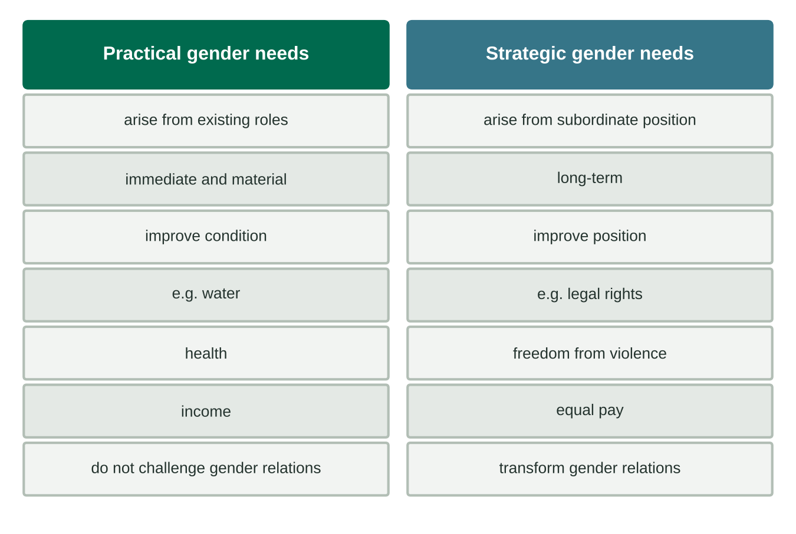
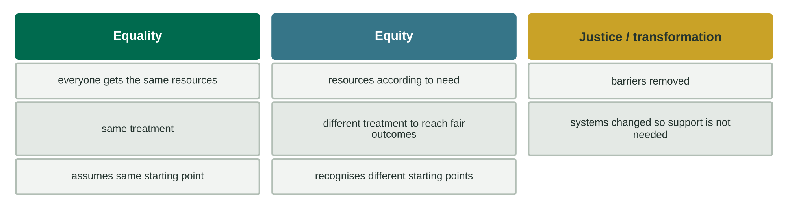
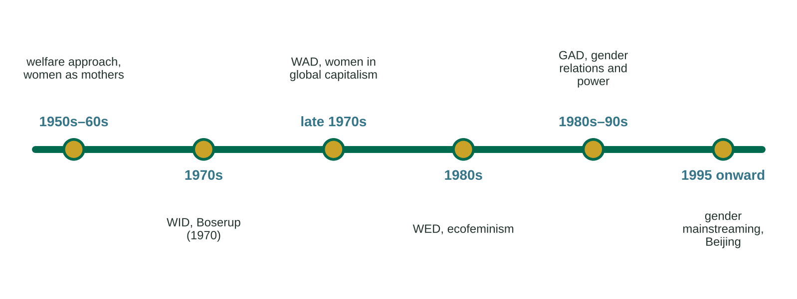

PC 122 জেন্ডার শিক্ষা
জেন্ডার ধারণা, সামাজিকীকরণ, সামাজিক-সাংস্কৃতিক, রাজনৈতিক, অর্থনৈতিক ও আইনি দিক, উন্নয়ন কাঠামো এবং বাংলাদেশ
এটি ইংরেজি পাঠ নোটের বাংলা সংস্করণ। পাঠতালিকা ও তথ্যসূত্রের বইয়ের নাম মূল ভাষায় রাখা হয়েছে, যাতে লাইব্রেরিতে সহজে খুঁজে পান।
সূচিপত্র
- ইউনিট ১: জেন্ডার পরিচিতি
- ইউনিট ২: জেন্ডার শিক্ষা: ধারণা ও রূপকল্প
- ইউনিট ৩: সামাজিক-সাংস্কৃতিক মাত্রা
- ইউনিট ৪: রাজনৈতিক, অর্থনৈতিক ও আইনগত মাত্রা
- ইউনিট ৫: জেন্ডার ও উন্নয়ন
- ইউনিট ৬: বাংলাদেশে জেন্ডার ও উন্নয়ন: ইস্যু ও অবস্থা
- ইউনিট ৭: দুর্যোগ, জরুরি অবস্থা ও মহামারিতে জেন্ডার
- পাঠতালিকা
- পরীক্ষা প্রস্তুতি প্রশ্নব্যাংক
- তথ্যসূত্র
এই কোর্স সম্পর্কে
জেন্ডার শিক্ষা (gender education) অনুসন্ধান করে সমাজ কীভাবে নারী, পুরুষ ও বৈচিত্র্যময় জেন্ডারের মানুষের মধ্যে পার্থক্য নির্মাণ করে, এই নির্মাণ কীভাবে অসমতা সৃষ্টি করে এবং শিক্ষা কীভাবে তা পুনরুৎপাদন বা রূপান্তর করতে পারে। এই কোর্সে মূল ধারণাসমূহের (জৈবিক লিঙ্গ ও জেন্ডার, পিতৃতন্ত্র, গৎবাঁধা ধারণা, ব্যবহারিক ও কৌশলগত চাহিদা, সমতা ও ন্যায্যতা, ক্ষমতায়ন, আন্তঃছেদিতা) সঙ্গে পরিচয় করানো হয়েছে; পরিবার, বিদ্যালয় ও শিক্ষাক্রমে জেন্ডার কীভাবে শেখা হয় তা অনুসন্ধান করা হয়েছে; জেন্ডারভিত্তিক সহিংসতাসহ সামাজিক-সাংস্কৃতিক, রাজনৈতিক, অর্থনৈতিক ও আইনগত মাত্রা বিশ্লেষণ করা হয়েছে; WID থেকে GAD পর্যন্ত উন্নয়ন উপাগম এবং CEDAW ও SDGs-এর মতো বৈশ্বিক অঙ্গীকারের বিবর্তন অনুসরণ করা হয়েছে; এবং বাংলাদেশের নীতি, ইস্যু ও ট্রান্সজেন্ডার জনগোষ্ঠীর অবস্থা পর্যালোচনা করে দুর্যোগ, সংঘাত ও মহামারিতে জেন্ডার প্রসঙ্গ দিয়ে শেষ করা হয়েছে।
কোর্সের উদ্দেশ্য
জেন্ডার, যৌনতা ও ট্রান্সজেন্ডারের ধারণা এবং জেন্ডার-সংক্রান্ত প্রধান পরিভাষাসমূহ ব্যাখ্যা করতে পারবেন।
জেন্ডার শিক্ষা, সামাজিকীকরণ ও শিক্ষাক্রমের রূপকল্প, পরিধি ও ভূমিকা বিশ্লেষণ করতে পারবেন।
জেন্ডারের সামাজিক-সাংস্কৃতিক, রাজনৈতিক, অর্থনৈতিক ও আইনগত মাত্রা এবং শিক্ষার ভূমিকা পরীক্ষা করতে পারবেন।
জরুরি অবস্থাসহ বৈশ্বিক ও জাতীয় জেন্ডার ও উন্নয়ন কাঠামো, নীতি ও চর্চা মূল্যায়ন করতে পারবেন।
প্রতিটি ইউনিট অফিশিয়াল পাঠ্যসূচির ক্রম অনুসরণ করে। প্রথমে মূল আলোচনা পড়ুন, তারপর মূল কথা বক্সগুলো, এরপর পরীক্ষার প্রস্তুতি প্রশ্ন দিয়ে নিজেকে যাচাই করুন।
সোনালি বক্স = অবশ্যই মনে রাখার বিষয়। সবুজাভ নীল বক্স = সংজ্ঞা ও পড়ার কৌশল। সবুজ বক্স = বাংলাদেশ প্রেক্ষাপট।
শেষ অধ্যায়টি বিশ্ববিদ্যালয় পরীক্ষার ধরনে একটি প্রশ্নব্যাংক (উত্তরসহ MCQ, সংক্ষিপ্ত ও রচনামূলক প্রশ্ন), এরপর APA 7th রীতিতে পূর্ণ তথ্যসূত্র।
ভর্তি, বাজেট ও নীতি সংক্রান্ত পরিসংখ্যান প্রতি বছর বদলায়। পরীক্ষার আগে BANBEIS, DPE, UGC ও UNESCO-এর সর্বশেষ তথ্য দেখে নিন।
ইউনিট ১: জেন্ডার পরিচিতি
অধ্যায়ের সারসংক্ষেপ
ট্রান্সজেন্ডার (transgender) বলতে সেসব মানুষকে বোঝায়, যাঁদের জেন্ডার পরিচয় জন্মের সময় নির্ধারিত লিঙ্গ থেকে ভিন্ন। দক্ষিণ এশিয়ায় স্বীকৃত তৃতীয় লিঙ্গ হিসেবে হিজড়া জনগোষ্ঠীর দীর্ঘ সাংস্কৃতিক ইতিহাস রয়েছে।
এই অধ্যায়ে যা আছে: জেন্ডার ও যৌনতা বোঝা; ট্রান্সজেন্ডার ও "অন্য জেন্ডার"; জৈবিক, মনোবৈজ্ঞানিক, সামাজিক ও সাংস্কৃতিক ব্যাখ্যা; নারী ও জেন্ডার: এরা কি সমার্থক?; জেন্ডার-সংক্রান্ত প্রধান ধারণাসমূহ; সামাজিক পরিবর্তনের পর্যায় ও নারী–পুরুষ সম্পর্ক।
শিক্ষাক্রমে যা বলা হয়েছেইউনিট ১: জেন্ডার পরিচিতি · ৬ সংযোগ ঘণ্টা
এই ইউনিট শেষে শিক্ষার্থীরা যা পারবে
- জেন্ডার-সংক্রান্ত মৌলিক ধারণাসমূহ ব্যাখ্যা করতে পারবেন
- সামাজিক বিকাশের বিভিন্ন পর্যায়ের প্রেক্ষিতে নারী–পুরুষ সম্পর্ক বিশ্লেষণ করতে পারবেন
- জেন্ডার ও যৌনতা বোঝার ধারণা
- ট্রান্সজেন্ডারের ধারণা, অন্য জেন্ডার
- জেন্ডারের জৈবিক, মনোবৈজ্ঞানিক, সামাজিক ও সাংস্কৃতিক ব্যাখ্যা
- নারী ও জেন্ডার; এরা কি সমার্থক?
- জেন্ডার-সংক্রান্ত প্রধান ধারণা: পিতৃতন্ত্র, জেন্ডার ভূমিকা, জেন্ডার গৎবাঁধা ধারণা, জেন্ডারভিত্তিক শ্রমবিভাজন, জেন্ডার চাহিদা (ব্যবহারিক ও কৌশলগত উভয়), সমতা, ন্যায্যতা, সচেতনতা/সংবেদনশীলতা সৃষ্টি, ক্ষমতায়ন ও জেন্ডার উন্নয়ন, জেন্ডার দৃষ্টিকোণ, জেন্ডার নিরপেক্ষতা, জেন্ডার-ভারসাম্যপূর্ণ
- সামাজিক পরিবর্তনের পর্যায় ও নারী–পুরুষ সম্পর্ক
১.১ জেন্ডার ও যৌনতা বোঝা
জৈবিক লিঙ্গ (sex) বলতে সেসব জৈবিক ও শারীরবৃত্তীয় বৈশিষ্ট্যকে (ক্রোমোজোম, হরমোন, প্রজনন অঙ্গ) বোঝায়, যেগুলোর ভিত্তিতে সাধারণত মানুষকে নারী, পুরুষ বা আন্তঃলিঙ্গ হিসেবে শ্রেণিবদ্ধ করা হয়।
জেন্ডার (gender) বলতে সামাজিকভাবে নির্মিত সেসব ভূমিকা, আচরণ, অভিব্যক্তি, পরিচয় ও সম্পর্ককে বোঝায়, যেগুলোকে একটি সমাজ নারী, পুরুষ ও বৈচিত্র্যময় জেন্ডারের মানুষের জন্য উপযুক্ত মনে করে। অ্যান ওকলি (Ann Oakley)-এর Sex, Gender and Society (1972) এই পার্থক্যকে জনপ্রিয় করে তোলে।
জেন্ডার পরিচয় (gender identity) হলো একজন ব্যক্তির নিজের জেন্ডার সম্পর্কে অন্তর্গত বোধ; জেন্ডার অভিব্যক্তি (gender expression) হলো একজন ব্যক্তি বাহ্যিকভাবে জেন্ডারকে যেভাবে উপস্থাপন করেন।
যৌনতা / যৌন অভিমুখিতা (sexuality / sexual orientation) বলতে অন্যদের প্রতি একজন ব্যক্তির আবেগীয়, প্রণয়মূলক ও যৌন আকর্ষণকে বোঝায়।
সিমোন দ্য বোভোয়ার (Simone de Beauvoir) (1949): "কেউ নারী হয়ে জন্মায় না, বরং নারী হয়ে ওঠে।" জুডিথ বাটলার (Judith Butler) (1990): জেন্ডার হলো সম্পাদনমূলক (performative), যা বারবার সম্পাদিত কাজের মাধ্যমে সৃষ্টি হয়। ওয়েস্ট ও জিমারম্যান (West and Zimmerman) (1987): জেন্ডার এমন কিছু, যা আমরা দৈনন্দিন মিথস্ক্রিয়ায় "করি"।
| জৈবিক লিঙ্গ | জেন্ডার |
|---|---|
| জৈবিক | সামাজিক ও সাংস্কৃতিক |
| মূলত জন্মের সময় নির্ধারিত | শিক্ষণলব্ধ, সংস্কৃতি ও সময়ভেদে পরিবর্তনশীল |
| সর্বজনীন শ্রেণি | সংস্কৃতিনির্দিষ্ট ভূমিকা ও প্রত্যাশা |
| উদাহরণ: কেবল নারীরাই সন্তান জন্ম দিতে পারেন | উদাহরণ: কেবল নারীদেরই রান্না বা শিশুর যত্ন নেওয়া উচিত, এমন বিশ্বাস |
১.২ ট্রান্সজেন্ডার ও "অন্য জেন্ডার"
ট্রান্সজেন্ডার (transgender) বলতে সেসব মানুষকে বোঝায়, যাঁদের জেন্ডার পরিচয় জন্মের সময় নির্ধারিত লিঙ্গ থেকে ভিন্ন। দক্ষিণ এশিয়ায় স্বীকৃত তৃতীয় লিঙ্গ হিসেবে হিজড়া জনগোষ্ঠীর দীর্ঘ সাংস্কৃতিক ইতিহাস রয়েছে। বাংলাদেশ সরকার ২০১৩ সালে হিজড়াদের তৃতীয় লিঙ্গ হিসেবে স্বীকৃতি দেয় এবং ২০১৯ সাল থেকে ভোটাররা হিজড়া হিসেবে নিবন্ধন করতে পারেন। অন্যান্য সংশ্লিষ্ট পরিভাষা: আন্তঃলিঙ্গ (intersex) (লিঙ্গ বৈশিষ্ট্যের ভিন্নতা), নন-বাইনারি (non-binary) এবং বৈচিত্র্যময় জেন্ডার (gender-diverse)। ট্রান্সজেন্ডার মানুষেরা শিক্ষা, কর্মসংস্থান, স্বাস্থ্যসেবা ও আবাসন থেকে বঞ্চনা, পারিবারিক প্রত্যাখ্যান ও সহিংসতার শিকার হন।
১.৩ জৈবিক, মনোবৈজ্ঞানিক, সামাজিক ও সাংস্কৃতিক ব্যাখ্যা

চিত্র ১. জেন্ডারের চারটি ব্যাখ্যা
জৈবিক ব্যাখ্যাগুলো শারীরিক পার্থক্যের ওপর গুরুত্ব দেয়, কিন্তু জৈবিক নিয়তিবাদের (biological determinism) (জীববিজ্ঞানই সামাজিক ভূমিকা নির্ধারণ করে, এই ধারণা) কারণে সমালোচিত হয়।
মনোবৈজ্ঞানিক ব্যাখ্যা: সিগমুন্ড ফ্রয়েড (Freud) (একাত্মীকরণ), লরেন্স কোলবার্গ (Kohlberg) (জ্ঞানীয়-বিকাশমূলক জেন্ডার স্থিরতা), আলবার্ট বান্দুরা (Bandura) (অনুকরণ ও পুনর্বলনের মাধ্যমে সামাজিক শিখন), স্যান্ড্রা বেম (Bem)-এর জেন্ডার স্কিমা তত্ত্ব (gender schema theory) (1981; শিশুরা জেন্ডার শ্রেণির মাধ্যমে তথ্য সংগঠিত করে)।
সামাজিক ব্যাখ্যা: জেন্ডার হলো সামাজিক সম্পর্ক ও ক্ষমতার একটি কাঠামো (Connell, 2009), যা বিভিন্ন প্রতিষ্ঠান (পরিবার, বিদ্যালয়, কর্মক্ষেত্র, রাষ্ট্র) দ্বারা টিকে থাকে।
সাংস্কৃতিক ব্যাখ্যা: মার্গারেট মিড (Margaret Mead)-এর Sex and Temperament (1935) পাপুয়া নিউগিনির আরাপেশ, মুন্ডুগুমোর ও চাম্বুলি জনগোষ্ঠীর মধ্যে ভিন্ন ভিন্ন জেন্ডার বিন্যাস খুঁজে পায়, যা দেখায় যে "পুরুষালি" ও "মেয়েলি" বৈশিষ্ট্য সংস্কৃতি দ্বারা গঠিত।
১.৪ নারী ও জেন্ডার: এরা কি সমার্থক?
না। "জেন্ডার" "নারী"-র সমার্থক নয়। জেন্ডার বলতে নারী, পুরুষ ও বৈচিত্র্যময় জেন্ডারের মানুষের মধ্যকার সম্পর্ক এবং পৌরুষ ও নারীত্বের কাঠামোকে বোঝায়। তাই জেন্ডার বিশ্লেষণে পুরুষ ও ছেলেরা (যেমন "আধিপত্যবাদী পৌরুষ"-এর চাপ; Connell), যৌন ও জেন্ডার সংখ্যালঘু এবং বিভিন্ন গোষ্ঠীর মধ্যকার ক্ষমতার সম্পর্কও অন্তর্ভুক্ত। প্রাথমিক উন্নয়ন নীতির কেন্দ্রে ছিল "নারী" (WID); পরবর্তী উপাগমগুলো "জেন্ডার"-এ (GAD) সরে আসে, কারণ পুরুষের সঙ্গে সম্পর্ক ও সামাজিক কাঠামো বিশ্লেষণ না করে নারীর বঞ্চনা বোঝা যায় না।
১.৫ জেন্ডার-সংক্রান্ত প্রধান ধারণাসমূহ
| ধারণা | অর্থ |
|---|---|
| পিতৃতন্ত্র (patriarchy) | এমন একটি সামাজিক ব্যবস্থা, যেখানে পুরুষেরা প্রধান ক্ষমতার অধিকারী এবং নেতৃত্ব, কর্তৃত্ব ও সম্পত্তির ক্ষেত্রে আধিপত্য বিস্তার করে; "সামাজিক কাঠামো ও চর্চার এমন একটি ব্যবস্থা, যেখানে পুরুষেরা নারীদের ওপর আধিপত্য, নিপীড়ন ও শোষণ চালায়" (Walby, 1990) |
| জেন্ডার ভূমিকা (gender role) | সমাজ প্রতিটি জেন্ডারের জন্য যেসব আচরণ ও দায়িত্বকে উপযুক্ত মনে করে |
| জেন্ডার গৎবাঁধা ধারণা (gender stereotype) | প্রতিটি জেন্ডারের বৈশিষ্ট্য সম্পর্কে সাধারণীকৃত, প্রায়ই ভুল বিশ্বাস ("ছেলেরা গণিতে ভালো", "মেয়েরা আবেগপ্রবণ") |
| জেন্ডারভিত্তিক শ্রমবিভাজন (gender division of labour) | জেন্ডারের ভিত্তিতে কাজের বণ্টন: মোজার (Moser)-এর বর্ণিত নারীর ত্রিমুখী ভূমিকা (triple roles): উৎপাদনমূলক, পুনরুৎপাদনমূলক ও সম্প্রদায় ব্যবস্থাপনা |
| ব্যবহারিক জেন্ডার চাহিদা (PGNs) | নারীর বিদ্যমান ভূমিকা থেকে উদ্ভূত চাহিদা, যা জেন্ডার বিন্যাসকে চ্যালেঞ্জ না করেই তাঁদের অবস্থার উন্নতি ঘটায়: পানি, স্বাস্থ্যসেবা, আয় (Moser, 1993; Molyneux, 1985) |
| কৌশলগত জেন্ডার চাহিদা (SGNs) | যেসব চাহিদা নারীর অধস্তন অবস্থানকে চ্যালেঞ্জ করে: আইনগত অধিকার, সহিংসতা থেকে সুরক্ষা, সমান মজুরি, নিজের শরীরের ওপর নিয়ন্ত্রণ, রাজনৈতিক কণ্ঠস্বর |
| জেন্ডার সমতা (gender equality) | সকল জেন্ডারের জন্য সমান অধিকার, দায়িত্ব ও সুযোগ |
| জেন্ডার ন্যায্যতা (gender equity) | নিজ নিজ চাহিদা অনুযায়ী ন্যায্য আচরণ, যা সমতা অর্জনের জন্য ভিন্ন ভিন্ন আচরণের প্রয়োজন হতে পারে |
| জেন্ডার সচেতনতা / সংবেদনশীলতা সৃষ্টি (gender awareness / sensitisation) | জেন্ডার যে অভিজ্ঞতাকে প্রভাবিত করে এবং ক্ষমতার পার্থক্য যে বিদ্যমান, তা স্বীকার করা; জেন্ডার ইস্যুতে সংবেদনশীল হয়ে ওঠার জন্য প্রশিক্ষণ |
| ক্ষমতায়ন (empowerment) | যে প্রেক্ষাপটে আগে মানুষকে জীবনের কৌশলগত সিদ্ধান্ত গ্রহণের সামর্থ্য থেকে বঞ্চিত রাখা হয়েছিল, সেখানে সেই সামর্থ্যের প্রসার ঘটানো (Kabeer, 1999): সম্পদ, কর্তৃত্বক্ষমতা (agency) ও অর্জন |
| জেন্ডার ও উন্নয়ন | উন্নয়নের এমন উপাগম, যা জেন্ডার সম্পর্ক বিশ্লেষণ ও সমাধান করে (দেখুন ইউনিট ৫) |
| জেন্ডার দৃষ্টিকোণ (gender lens) | নীতি, কার্যক্রম বা উপাত্তকে এমনভাবে দেখার উপায়, যাতে নারী, পুরুষ ও বৈচিত্র্যময় জেন্ডারের মানুষের ওপর এগুলোর ভিন্ন ভিন্ন প্রভাব বোঝা যায় |
| জেন্ডার নিরপেক্ষতা (gender neutrality) | যেসব নীতি বা ভাষা জেন্ডারের ভিত্তিতে পার্থক্য করে না। চাহিদার প্রকৃত পার্থক্য উপেক্ষা করলে "জেন্ডার-নিরপেক্ষ" নীতি "জেন্ডার-অন্ধ" হয়ে যেতে পারে |
| জেন্ডার-ভারসাম্যপূর্ণ উপাগম (gender-balanced approach) | সিদ্ধান্ত গ্রহণ, জনবল ও বিষয়বস্তুতে সকল জেন্ডারের প্রতিনিধিত্ব ও অংশগ্রহণ নিশ্চিত করা |
| জেন্ডার নিরীক্ষা (gender audit) | একটি প্রতিষ্ঠানের নীতি, কার্যক্রম, বাজেট ও সংস্কৃতি কতটা জেন্ডার সমতাকে এগিয়ে নেয় তার পদ্ধতিগত মূল্যায়ন (যেমন ILO Participatory Gender Audit) |
| আন্তঃছেদিতা (intersectionality) | কিম্বার্লি ক্রেনশ (Kimberlé Crenshaw) (1989): নিপীড়নের বিভিন্ন ব্যবস্থা (জেন্ডার, বর্ণ, শ্রেণি, জাতপাত, প্রতিবন্ধিতা, ধর্ম, নৃতাত্ত্বিক পরিচয়) পরস্পরকে ছেদ করে, ফলে একজন দরিদ্র, প্রতিবন্ধী, ক্ষুদ্র নৃগোষ্ঠীর মেয়ে বহুগুণ বঞ্চনার শিকার হয় |

চিত্র ২. ব্যবহারিক ও কৌশলগত জেন্ডার চাহিদা (Moser, 1993)

চিত্র ৩. সমতা বনাম ন্যায্যতা
১.৬ সামাজিক পরিবর্তনের পর্যায় ও নারী–পুরুষ সম্পর্ক
সারা লংউই (Sara Longwe)-এর নারী ক্ষমতায়ন কাঠামো (Women's Empowerment Framework) (1991) সমতার পাঁচটি স্তর বর্ণনা করে, যেগুলোকে জেন্ডার সম্পর্কের পরিবর্তনের পর্যায় হিসেবে পড়া যায়:
")
চিত্র ৪. লংউইয়ের নারী ক্ষমতায়ন কাঠামো: সমতার স্তর (সর্বোচ্চ স্তর ওপরে)
ঐতিহাসিকভাবে সমাজগুলো তীব্র পিতৃতান্ত্রিক ব্যবস্থা থেকে ক্রমশ অধিকতর সমতাভিত্তিক ব্যবস্থার দিকে অগ্রসর হয়েছে, যেমন আনুষ্ঠানিক আইনগত সমতা (ভোটাধিকার, শিক্ষার অধিকার), প্রকৃত সমতা (সমান ফলাফল ও সুযোগ) এবং রূপান্তরমূলক সমতা (রীতিনীতি ও কাঠামোর পরিবর্তন) পর্যায়ের মধ্য দিয়ে।
ইউনিট ২: জেন্ডার শিক্ষা: ধারণা ও রূপকল্প
অধ্যায়ের সারসংক্ষেপ
জেন্ডার শিক্ষা নারী অধ্যয়ন (১৯৬০-এর দশকের শেষভাগ থেকে, দ্বিতীয় তরঙ্গের নারীবাদের সঙ্গে সম্পর্কিত) থেকে বিকশিত হয় এবং ১৯৮০–৯০-এর দশকে পুরুষ, পৌরুষ ও যৌনতাকে অন্তর্ভুক্ত করে জেন্ডার অধ্যয়নে সম্প্রসারিত হয়। শিক্ষাক্ষেত্রে প্রাথমিক কাজগুলোর কেন্দ্রে ছিল বিদ্যালয়ে মেয়েদের প্রবেশাধিকার; পরবর্তী কাজগুলোতে শিক্ষাক্রম, শ্রেণিকক্ষের মিথস্ক্রিয়া ও অপ্রকাশ্য শিক্ষাক্রমে লিঙ্গবাদ পরীক্ষা করা হয় (Spender, 1982; Sadker & Sadker…
এই অধ্যায়ে যা আছে: জেন্ডার শিক্ষার উৎপত্তি ও বিকাশ; গুরুত্ব, পরিধি ও উদ্দেশ্য; অন্যান্য বিদ্যাশাখার সঙ্গে সম্পর্ক; পরিবার, বিদ্যালয় ও সমাজের ভূমিকা; সামাজিকীকরণ ও জেন্ডার শিখন; শিক্ষাক্রম ও অপ্রকাশ্য শিক্ষাক্রমের ভূমিকা; রাষ্ট্রীয় শিক্ষানীতি ও জেন্ডার; বৈচিত্র্য ও জেন্ডার-একীভূত বিদ্যালয়।
শিক্ষাক্রমে যা বলা হয়েছেইউনিট ২: জেন্ডার শিক্ষা: ধারণা ও রূপকল্প · ৬ সংযোগ ঘণ্টা
এই ইউনিট শেষে শিক্ষার্থীরা যা পারবে
- জেন্ডার শিক্ষার উৎপত্তি ও বিকাশ ব্যাখ্যা করতে পারবেন
- অন্যান্য বিদ্যাশাখার সঙ্গে জেন্ডার শিক্ষার সম্পর্ক স্থাপন করতে পারবেন
- জেন্ডার শিক্ষার প্রেক্ষিতে শিক্ষাক্রম ও অপ্রকাশ্য শিক্ষাক্রমের ভূমিকা বিশ্লেষণ করতে পারবেন
- জেন্ডারের প্রেক্ষিতে রাষ্ট্রীয় শিক্ষানীতি সমালোচনামূলকভাবে পর্যালোচনা করতে পারবেন
- জেন্ডার শিক্ষার উৎপত্তি ও বিকাশ
- গুরুত্ব, পরিধি ও উদ্দেশ্য
- অন্যান্য বিদ্যাশাখার সঙ্গে সম্পর্ক
- পরিবার, বিদ্যালয় ও সমাজের ভূমিকা
- সামাজিকীকরণ ও জেন্ডার শিখন
- শিক্ষাক্রম ও অপ্রকাশ্য শিক্ষাক্রমের ভূমিকা
- রাষ্ট্রীয় শিক্ষানীতি ও জেন্ডার
- বৈচিত্র্য ও জেন্ডার-একীভূত বিদ্যালয়
২.১ জেন্ডার শিক্ষার উৎপত্তি ও বিকাশ
জেন্ডার শিক্ষা নারী অধ্যয়ন (women's studies) (১৯৬০-এর দশকের শেষভাগ থেকে, দ্বিতীয় তরঙ্গের নারীবাদের সঙ্গে সম্পর্কিত) থেকে বিকশিত হয় এবং ১৯৮০–৯০-এর দশকে পুরুষ, পৌরুষ ও যৌনতাকে অন্তর্ভুক্ত করে জেন্ডার অধ্যয়নে (gender studies) সম্প্রসারিত হয়। শিক্ষাক্ষেত্রে প্রাথমিক কাজগুলোর কেন্দ্রে ছিল বিদ্যালয়ে মেয়েদের প্রবেশাধিকার; পরবর্তী কাজগুলোতে শিক্ষাক্রম, শ্রেণিকক্ষের মিথস্ক্রিয়া ও অপ্রকাশ্য শিক্ষাক্রমে লিঙ্গবাদ পরীক্ষা করা হয় (Spender, 1982; Sadker & Sadker, 1994)। আন্তর্জাতিক কাঠামোসমূহ (CEDAW 1979, Beijing 1995, EFA 2000, SDGs 2015) শিক্ষায় ও শিক্ষার মাধ্যমে জেন্ডার সমতাকে একটি বৈশ্বিক অঙ্গীকারে পরিণত করে। বাংলাদেশে ঢাকা বিশ্ববিদ্যালয় ২০০০ সালে নারী অধ্যয়ন বিভাগ প্রতিষ্ঠা করে (বর্তমানে উইমেন অ্যান্ড জেন্ডার স্টাডিজ বিভাগ)।
২.২ গুরুত্ব, পরিধি ও উদ্দেশ্য
জেন্ডার শিক্ষা হলো জেন্ডার সম্পর্কে এবং জেন্ডার সমতার জন্য শিক্ষা: শিক্ষার্থীদের বুঝতে সাহায্য করা যে জেন্ডার কীভাবে নির্মিত হয়, অসমতা ও বৈষম্য চিনতে সাহায্য করা এবং শ্রদ্ধাশীল, সমতাভিত্তিক সম্পর্কের জন্য প্রয়োজনীয় মনোভাব ও দক্ষতা বিকশিত করা।
উদ্দেশ্য: জেন্ডার নির্মাণ ও গৎবাঁধা ধারণা সম্পর্কে সচেতনতা বৃদ্ধি; সমান সুযোগ ও অধিকার প্রসার; জেন্ডারভিত্তিক সহিংসতা প্রতিরোধ; গণমাধ্যম ও সংস্কৃতি বিষয়ে সমালোচনামূলক চিন্তন বিকাশ; সকল শিক্ষার্থীকে তাদের সম্ভাবনা বিকাশে সহায়তা; জেন্ডার-সংবেদনশীল শিক্ষক ও নেতৃত্ব তৈরি।
পরিধি: শিক্ষাক্রম, পাঠ্যপুস্তক, শিক্ষণপদ্ধতি, শ্রেণিকক্ষের মিথস্ক্রিয়া, বিদ্যালয়ের পরিবেশ ও নিরাপত্তা, শিক্ষক শিক্ষা, নেতৃত্ব, নীতি, সম্প্রদায় ও গণমাধ্যম।
২.৩ অন্যান্য বিদ্যাশাখার সঙ্গে সম্পর্ক
সমাজবিজ্ঞান (সামাজিক কাঠামো), মনোবিজ্ঞান (পরিচয়, সামাজিকীকরণ), নৃবিজ্ঞান (সাংস্কৃতিক ভিন্নতা), অর্থনীতি (শ্রম, পরিচর্যা কাজ), রাষ্ট্রবিজ্ঞান (ক্ষমতা, প্রতিনিধিত্ব), আইন (অধিকার), ইতিহাস (নারীর ইতিহাস), স্বাস্থ্যবিজ্ঞান (প্রজনন স্বাস্থ্য), উন্নয়ন অধ্যয়ন এবং সাহিত্য ও গণমাধ্যম অধ্যয়ন।
২.৪ পরিবার, বিদ্যালয় ও সমাজের ভূমিকা
পরিবার: জেন্ডার সামাজিকীকরণের প্রথম ক্ষেত্র (খেলনা, গৃহস্থালি কাজ, চলাফেরার স্বাধীনতা, শিক্ষায় বিনিয়োগ, উত্তরাধিকার)।
বিদ্যালয়: আনুষ্ঠানিক ও অপ্রকাশ্য শিক্ষাক্রম; শিক্ষকের প্রত্যাশা ও মিথস্ক্রিয়া; পৃথক বা সহশিক্ষা ব্যবস্থা; বিদ্যালয়ের নিরাপত্তা; শিক্ষক ও নেতৃত্বের মধ্যে আদর্শ ব্যক্তিত্ব।
সমাজ: ধর্ম, গণমাধ্যম, সমবয়সী দল, সম্প্রদায়ের রীতিনীতি, আইন ও শ্রমবাজার।
২.৫ সামাজিকীকরণ ও জেন্ডার শিখন

চিত্র ৫. সামাজিকীকরণের মাধ্যমে জেন্ডার যেভাবে শেখা হয়
কৌশলসমূহ: প্রভাবিতকরণ ও প্রণালীকরণ (manipulation and canalisation) (Oakley: শিশুদের জেন্ডার-নির্দিষ্ট খেলনা ও কাজের দিকে পরিচালিত করা), পুনর্বলন (প্রশংসা ও শাস্তি), অনুকরণীয় আদর্শ প্রদর্শন (modelling), মৌখিক সম্বোধন ("লক্ষ্মী মেয়ে", "ছেলেরা কাঁদে না") এবং জেন্ডার স্কিমা।
২.৬ শিক্ষাক্রম ও অপ্রকাশ্য শিক্ষাক্রমের ভূমিকা
আনুষ্ঠানিক শিক্ষাক্রম: পাঠ্যপুস্তকের বিষয়বস্তু ও ছবিতে নারীর প্রতিনিধিত্ব কম থাকতে পারে, তাঁদের কেবল গৃহস্থালি ভূমিকায় দেখানো হতে পারে কিংবা নারীর অবদান উপেক্ষা করা হতে পারে। জেন্ডার-সংবেদনশীল শিক্ষাক্রমে বৈচিত্র্যময় আদর্শ ব্যক্তিত্ব অন্তর্ভুক্ত থাকে, গৎবাঁধা ধারণাকে চ্যালেঞ্জ করা হয় এবং জেন্ডার সমতা-বিষয়ক বিষয়বস্তু থাকে।
অপ্রকাশ্য শিক্ষাক্রম: শিক্ষকেরা ছেলেদের বেশি মনোযোগ দেন ও কঠিন প্রশ্ন করেন; মেয়েদের পরিষ্কারের এবং ছেলেদের ভারী জিনিস তোলার দায়িত্ব দেন; বসার বিন্যাস; শৃঙ্খলা রক্ষার চর্চা; লিঙ্গবাদী রসিকতা; এবং নেতৃত্বে জেন্ডার গঠন (অধিকাংশ প্রধান শিক্ষক পুরুষ, অথচ প্রাথমিক বিদ্যালয়ের অনেক শিক্ষক নারী)।
NCTB-এর পাঠ্যপুস্তক পর্যালোচনায় গৎবাঁধা ধারণা দূর করার চেষ্টা করা হয়েছে; তবুও গবেষণায় স্থায়ী ভারসাম্যহীনতা দেখা যায় (যেমন পুরুষ চরিত্রের আধিক্য ও গৎবাঁধা পেশা)।
২.৭ রাষ্ট্রীয় শিক্ষানীতি ও জেন্ডার
জাতীয় শিক্ষানীতি ২০১০ জেন্ডার সমতা, পাঠ্যপুস্তকে জেন্ডার বৈষম্য দূরীকরণ, নারী শিক্ষক নিয়োগ (সরকারি প্রাথমিক শিক্ষক নিয়োগে নারীদের জন্য ৬০% কোটা), মেয়েদের উপবৃত্তি, পৃথক শৌচাগার এবং নিরাপদ বিদ্যালয়ের অঙ্গীকার করে। PEDP ও মাধ্যমিক কর্মসূচিগুলোতে জেন্ডার কর্মপরিকল্পনা অন্তর্ভুক্ত রয়েছে। মাধ্যমিক পর্যায়ে ছাত্রী উপবৃত্তি কর্মসূচি (Female Secondary School Stipend Programme) (১৯৯৪ সাল থেকে) জেন্ডার সমতা অর্জনে একটি আন্তর্জাতিকভাবে উদ্ধৃত সাফল্য।
২.৮ বৈচিত্র্য ও জেন্ডার-একীভূত বিদ্যালয়
একটি জেন্ডার-একীভূত বিদ্যালয়: নিরাপত্তা নিশ্চিত করে (হয়রানিবিরোধী কমিটি, নিরাপদ যাতায়াত); জেন্ডারভিত্তিক পৃথক ও প্রবেশগম্য শৌচাগার এবং মাসিক স্বাস্থ্যব্যবস্থাপনার (MHM) সুবিধা প্রদান করে; একীভূত ভাষা ও উপকরণ ব্যবহার করে; শিক্ষকদের জেন্ডার-সংবেদনশীল শিক্ষণপদ্ধতিতে প্রশিক্ষণ দেয় (FAWE, 2005/2018); নেতৃত্ব ও সহশিক্ষাক্রমিক কার্যক্রমে মেয়ে ও ছেলেদের সমানভাবে সম্পৃক্ত করে; ট্রান্সজেন্ডার ও বৈচিত্র্যময় জেন্ডারের শিক্ষার্থীদের স্বাগত জানায়; এবং বয়স-উপযোগী, সমন্বিত জীবন দক্ষতা ও যৌনতা শিক্ষা প্রদান করে।
ইউনিট ৩: সামাজিক-সাংস্কৃতিক মাত্রা
অধ্যায়ের সারসংক্ষেপ
শালীনতা, সম্মান, পর্দা এবং নারীর "যথাযথ স্থান" সম্পর্কিত মূল্যবোধ চলাফেরা ও অংশগ্রহণকে সীমিত করে। জেন্ডারভিত্তিক শ্রমবিভাজন অবৈতনিক পরিচর্যা ও গৃহস্থালি কাজ প্রধানত নারীর ওপর ন্যস্ত করে (নারীরা গড়ে পুরুষের চেয়ে কয়েক গুণ বেশি অবৈতনিক পরিচর্যা কাজ করেন), যা শিক্ষা, বেতনভুক্ত কাজ ও জনজীবনের জন্য তাঁদের সময় সীমিত করে।
এই অধ্যায়ে যা আছে: বিবাহ ও পরিবার: পিতৃতন্ত্র ও মাতৃতন্ত্র; সামাজিক মূল্যবোধ, সামাজিক শ্রমবিভাজন ও অংশগ্রহণ; ট্রান্সজেন্ডার জনগোষ্ঠীর সামাজিক প্রেক্ষাপট; জেন্ডারভিত্তিক পৃথকীকরণ ও বৈষম্য; জেন্ডারভিত্তিক সহিংসতা (GBV) ও যৌন হয়রানি; জেন্ডার ব্যবস্থাপনা পদ্ধতি (GMS) ও শিক্ষার ভূমিকা।
মূল পরিভাষা:
- জেন্ডারভিত্তিক সহিংসতা (gender-based violence) : জেন্ডারের ভিত্তিতে কোনো ব্যক্তির প্রতি পরিচালিত ক্ষতিকর কাজ, যার মূলে রয়েছে জেন্ডার অসমতা, ক্ষমতার অপব্যবহার ও ক্ষতিকর রীতিনীতি; এর মধ্যে শারীরিক, যৌন, মানসিক ও অর্থনৈতিক ক্ষতি এবং হুমকি, বলপ্রয়োগ ও স্বাধীনতা হরণ অন্তর্ভুক্ত (UNHCR; UN…
শিক্ষাক্রমে যা বলা হয়েছেইউনিট ৩: সামাজিক-সাংস্কৃতিক মাত্রা · ৬ সংযোগ ঘণ্টা
এই ইউনিট শেষে শিক্ষার্থীরা যা পারবে
- জেন্ডারের সামাজিক-সাংস্কৃতিক মাত্রা সমালোচনামূলকভাবে বিশ্লেষণ করতে পারবেন
- জীবনের সকল ক্ষেত্রে জেন্ডারভিত্তিক বঞ্চনার পরিস্থিতি ব্যাখ্যা করতে পারবেন
- জেন্ডারভিত্তিক সহিংসতা ও যৌন হয়রানির প্রকৃতি বর্ণনা করতে পারবেন
- ঝুঁকিপূর্ণ পরিস্থিতি কাটিয়ে উঠতে জেন্ডার ব্যবস্থাপনা পদ্ধতি (GMS) ও শিক্ষার ভূমিকা মূল্যায়ন করতে পারবেন
- বিবাহ ও পরিবার: পিতৃতন্ত্র ও মাতৃতন্ত্র
- সামাজিক মূল্যবোধ, সামাজিক শ্রমবিভাজন এবং সামাজিক জীবনে অংশগ্রহণ
- ট্রান্সজেন্ডারের সামাজিক প্রেক্ষাপট
- জীবনের সকল ক্ষেত্রে জেন্ডারভিত্তিক পৃথকীকরণ ও বৈষম্য
- জেন্ডারভিত্তিক সহিংসতা ও যৌন হয়রানি: পরিবার, কর্মক্ষেত্র, সমবয়সী, শিক্ষাপ্রতিষ্ঠান, যানবাহন, সাইবার জগৎ এবং সহিংসতা/
- জেন্ডার ব্যবস্থাপনা পদ্ধতি (GMS); পরিস্থিতির উন্নয়নে শিক্ষার ভূমিকা
৩.১ বিবাহ ও পরিবার: পিতৃতন্ত্র ও মাতৃতন্ত্র
পিতৃতান্ত্রিক পরিবার: কর্তৃত্ব পিতা বা জ্যেষ্ঠ পুরুষের হাতে; পিতৃসূত্রীয় বংশধারা ও উত্তরাধিকার; পিতৃবাস (কনে স্বামীর বাড়িতে চলে যান)। বাংলাদেশে এটিই প্রধান ধরন।
মাতৃতান্ত্রিক / মাতৃসূত্রীয় পরিবার: বংশধারা ও সম্পত্তি নারীর মাধ্যমে নির্ধারিত হয়; বাংলাদেশে এর উদাহরণ গারো (মান্দি) ও খাসি জনগোষ্ঠী, যেখানে সম্পত্তি কন্যাদের মাধ্যমে হস্তান্তরিত হয় এবং স্বামীরা প্রায়ই স্ত্রীর পরিবারের সঙ্গে বসবাস করেন। (মাতৃসূত্রীয় হওয়ার অর্থ এই নয় যে নারীরাই রাজনৈতিক ক্ষমতার অধিকারী।)
ইস্যু: বাল্যবিবাহ (বাংলাদেশে এই হার বিশ্বের সর্বোচ্চগুলোর একটি; সাম্প্রতিক MICS জরিপ অনুযায়ী ২০–২৪ বছর বয়সী নারীদের প্রায় অর্ধেকের বিয়ে হয়েছে ১৮ বছর বয়সের আগে), যৌতুক, বহুবিবাহ, বিবাহবিচ্ছেদ, উত্তরাধিকার এবং পরিবারে নারীর সিদ্ধান্ত গ্রহণের ক্ষমতা।
৩.২ সামাজিক মূল্যবোধ, সামাজিক শ্রমবিভাজন ও অংশগ্রহণ
শালীনতা, সম্মান, পর্দা এবং নারীর "যথাযথ স্থান" সম্পর্কিত মূল্যবোধ চলাফেরা ও অংশগ্রহণকে সীমিত করে। জেন্ডারভিত্তিক শ্রমবিভাজন অবৈতনিক পরিচর্যা ও গৃহস্থালি কাজ প্রধানত নারীর ওপর ন্যস্ত করে (নারীরা গড়ে পুরুষের চেয়ে কয়েক গুণ বেশি অবৈতনিক পরিচর্যা কাজ করেন), যা শিক্ষা, বেতনভুক্ত কাজ ও জনজীবনের জন্য তাঁদের সময় সীমিত করে।
৩.৩ ট্রান্সজেন্ডার জনগোষ্ঠীর সামাজিক প্রেক্ষাপট
বাংলাদেশের হিজড়া জনগোষ্ঠী ঐতিহ্যগতভাবে একজন গুরু-র অধীনে ঘরানা-য় বসবাস করেন এবং জন্ম ও বিয়ের অনুষ্ঠানে আশীর্বাদ দিয়ে ও বাজারে অর্থ সংগ্রহ করে উপার্জন করেন। ২০১৩ সালে আইনগত স্বীকৃতি সত্ত্বেও তাঁরা কলঙ্ক, পারিবারিক প্রত্যাখ্যান, শিক্ষা ও কর্মক্ষেত্র থেকে বঞ্চনা, সহিংসতা ও সীমিত স্বাস্থ্যসেবার মুখোমুখি হন। সরকারি ও এনজিও কর্মসূচি (হিজড়া শিক্ষার্থীদের উপবৃত্তি, বৃত্তিমূলক প্রশিক্ষণ, কিছু বেসরকারি প্রতিষ্ঠানে কর্মসংস্থান কোটা) অগ্রগতির পদক্ষেপ, তবে সামাজিক গ্রহণযোগ্যতা এখনো সীমিত।
৩.৪ জেন্ডারভিত্তিক পৃথকীকরণ ও বৈষম্য
জীবনের সর্বত্র বৈষম্য দেখা যায়: পুত্রসন্তানের প্রতি পক্ষপাত ও অসম পুষ্টি, অসম শিক্ষা, সীমিত চলাফেরা, পেশাগত পৃথকীকরণ, মজুরি ব্যবধান, অসম উত্তরাধিকার, নেতৃত্বে কম প্রতিনিধিত্ব এবং গণমাধ্যমে গৎবাঁধা উপস্থাপন।
৩.৫ জেন্ডারভিত্তিক সহিংসতা (GBV) ও যৌন হয়রানি
জেন্ডারভিত্তিক সহিংসতা: জেন্ডারের ভিত্তিতে কোনো ব্যক্তির প্রতি পরিচালিত ক্ষতিকর কাজ, যার মূলে রয়েছে জেন্ডার অসমতা, ক্ষমতার অপব্যবহার ও ক্ষতিকর রীতিনীতি; এর মধ্যে শারীরিক, যৌন, মানসিক ও অর্থনৈতিক ক্ষতি এবং হুমকি, বলপ্রয়োগ ও স্বাধীনতা হরণ অন্তর্ভুক্ত (UNHCR; UN Declaration on the Elimination of Violence against Women, 1993)।
| পরিবেশ | সহিংসতা ও হয়রানির ধরন |
|---|---|
| পরিবার | পারিবারিক সহিংসতা, বৈবাহিক ধর্ষণ, যৌতুকজনিত সহিংসতা, এসিড নিক্ষেপ, বাল্যবিবাহ, সম্মানরক্ষার নামে সহিংসতা |
| কর্মক্ষেত্র | যৌন হয়রানি, অসম মজুরি, অনিরাপদ কর্মপরিবেশ (যেমন তৈরি পোশাক কারখানা) |
| সমবয়সী | উৎপীড়ন, "ইভ টিজিং" (রাস্তাঘাটে যৌন হয়রানি), প্রণয়সম্পর্কে সহিংসতা |
| শিক্ষাপ্রতিষ্ঠান | শিক্ষক বা শিক্ষার্থী কর্তৃক হয়রানি, শারীরিক শাস্তি, জেন্ডারভিত্তিক উৎপীড়ন |
| যানবাহন | বাস, ট্রেন ও রাস্তায় হয়রানি |
| সাইবার জগৎ | সাইবার উৎপীড়ন, ছবিভিত্তিক নিপীড়ন, হুমকি, পিছু নেওয়া (স্টকিং), যৌন ব্ল্যাকমেইল (sextortion) |
গণমাধ্যমের ভূমিকা: গণমাধ্যম সহিংসতা উসকে দিতে পারে (যৌন বস্তুকরণ, সহিংসতাকে স্বাভাবিক করে তোলা, চাঞ্চল্যকর প্রতিবেদন) অথবা প্রতিরোধ করতে পারে (সচেতনতামূলক প্রচারণা, নিপীড়ন উন্মোচন, ইতিবাচক আদর্শ ব্যক্তিত্ব)। বাংলাদেশে আইনগত পদক্ষেপ: নারী ও শিশু নির্যাতন দমন আইন ২০০০ (২০২০ সালে ধর্ষণের জন্য মৃত্যুদণ্ড অন্তর্ভুক্ত করে সংশোধিত); পারিবারিক সহিংসতা (প্রতিরোধ ও সুরক্ষা) আইন ২০১০; এসিড অপরাধ দমন আইন ২০০২; যৌতুক নিরোধ আইন ২০১৮; যৌন হয়রানি বিষয়ে হাইকোর্টের নির্দেশনা (২০০৯), যা শিক্ষাপ্রতিষ্ঠান ও কর্মক্ষেত্রে অভিযোগ কমিটি গঠন বাধ্যতামূলক করে; অনলাইন হয়রানি মোকাবিলায় ডিজিটাল/সাইবার নিরাপত্তা আইন; এবং জাতীয় হেল্পলাইন 109।
৩.৬ জেন্ডার ব্যবস্থাপনা পদ্ধতি (GMS) ও শিক্ষার ভূমিকা
জেন্ডার ব্যবস্থাপনা পদ্ধতি (Gender Management System) (Commonwealth Secretariat, 1999) হলো সরকারের অভ্যন্তরে কাঠামো, কৌশল ও প্রক্রিয়ার একটি নেটওয়ার্ক, যার উদ্দেশ্য সকল নীতি, পরিকল্পনা ও কার্যক্রমে জেন্ডারকে সমন্বিত করা (জেন্ডার মূলধারাকরণ (gender mainstreaming))। উপাদান: সহায়ক পরিবেশ (রাজনৈতিক সদিচ্ছা, আইনি কাঠামো), কাঠামো (নেতৃত্বদানকারী সংস্থা, জেন্ডার ফোকাল পয়েন্ট, আন্তঃমন্ত্রণালয় পরিচালনা কমিটি), কৌশল (জেন্ডার বিশ্লেষণ, জেন্ডারভিত্তিক বিভাজিত উপাত্ত, জেন্ডার বাজেটিং, প্রশিক্ষণ) এবং প্রক্রিয়া (পরিকল্পনা, পরিবীক্ষণ, মূল্যায়ন)। বাংলাদেশ ২০০৯–১০ অর্থবছরে জেন্ডার বাজেটিং চালু করে; মহিলা ও শিশু বিষয়ক মন্ত্রণালয় হলো নেতৃত্বদানকারী সংস্থা এবং বিভিন্ন মন্ত্রণালয়ে জেন্ডার ফোকাল পয়েন্ট রয়েছে।
পরিস্থিতির উন্নয়নে শিক্ষার ভূমিকা: জেন্ডার-সংবেদনশীল শিক্ষাক্রম ও শিক্ষণপদ্ধতি; অধিকার ও আইন সম্পর্কে সচেতনতা; জীবন দক্ষতা ও সমন্বিত যৌনতা শিক্ষা; নিরাপদ বিদ্যালয়; ছেলে ও পুরুষদের সম্পৃক্ত করা; আদর্শ ব্যক্তিত্ব হিসেবে নারী শিক্ষক ও নেতৃত্ব; এবং সমালোচনামূলক গণমাধ্যম সাক্ষরতা।
ইউনিট ৪: রাজনৈতিক, অর্থনৈতিক ও আইনগত মাত্রা
অধ্যায়ের সারসংক্ষেপ
বাংলাদেশে নারীর শ্রমশক্তিতে অংশগ্রহণ বেড়েছে (তৈরি পোশাক খাত, ক্ষুদ্রঋণ ও কৃষির কারণে), তবে তা এখনো পুরুষের তুলনায় অনেক কম এবং অনানুষ্ঠানিক, স্বল্প মজুরির কাজে কেন্দ্রীভূত। ইস্যু: মজুরি ব্যবধান, পেশাগত পৃথকীকরণ, অবৈতনিক পরিচর্যা কাজ, ঋণ, জমি ও প্রযুক্তিতে সীমিত প্রবেশাধিকার, হয়রানি এবং আয়ের ওপর সীমিত সিদ্ধান্ত গ্রহণের ক্ষমতা।
এই অধ্যায়ে যা আছে: রাজনীতিতে জেন্ডার; অর্থনৈতিক অধিকার ও সুযোগ; আইনগত অধিকার ও জেন্ডার।
শিক্ষাক্রমে যা বলা হয়েছেইউনিট ৪: রাজনৈতিক, অর্থনৈতিক ও আইনগত মাত্রা · ৬ সংযোগ ঘণ্টা
এই ইউনিট শেষে শিক্ষার্থীরা যা পারবে
- জেন্ডারের রাজনৈতিক, অর্থনৈতিক ও আইনগত মাত্রা সমালোচনামূলকভাবে বিশ্লেষণ করতে পারবেন
- জেন্ডারের আইনগত অধিকার এবং আইনি সহায়তা লাভের সুযোগ অনুসন্ধান করতে পারবেন
- রাজনীতিতে জেন্ডার: রাষ্ট্রীয় নীতি, রাজনৈতিক অধিকার, সিদ্ধান্ত গ্রহণ ও অংশগ্রহণ
- অর্থনৈতিক অধিকার ও সুযোগ: অর্থনৈতিক কর্মকাণ্ডে সিদ্ধান্ত গ্রহণ ও অংশগ্রহণ
- আইনগত অধিকার ও জেন্ডার: পারিবারিক ও ব্যক্তিগত আইন, আইনগত অধিকার, আইনি সহায়তায় নারীর প্রবেশাধিকার
- জেন্ডার অধিকার ও সুযোগ বোঝায় শিক্ষার ভূমিকা
৪.১ রাজনীতিতে জেন্ডার
রাজনৈতিক অধিকার: সংবিধান সমান অধিকারের নিশ্চয়তা দেয় (অনুচ্ছেদ ২৭, ২৮) এবং নারীর জন্য বিশেষ বিধানের অনুমতি দেয় (অনুচ্ছেদ ২৮(৪))। ৩৫০ সদস্যের জাতীয় সংসদে নারীদের জন্য ৫০টি সংরক্ষিত আসন (পরোক্ষভাবে নির্বাচিত) এবং স্থানীয় সরকারে (ইউনিয়ন পরিষদ) এক-তৃতীয়াংশ সংরক্ষিত আসন রয়েছে।
সিদ্ধান্ত গ্রহণ ও অংশগ্রহণ: বাংলাদেশে দীর্ঘ সময় ধরে নারী সরকারপ্রধান থাকলেও সংসদে (সরাসরি নির্বাচিত), মন্ত্রিসভায়, স্থানীয় নেতৃত্বে, রাজনৈতিক দলে এবং সিভিল সার্ভিসের নেতৃত্বে নারীর অংশগ্রহণ এখনো কম। বাধাগুলোর মধ্যে রয়েছে পিতৃতান্ত্রিক রীতিনীতি, রাজনীতিতে অর্থ ও সহিংসতা এবং পারিবারিক দায়িত্ব।
শিক্ষার ভূমিকা: নাগরিক শিক্ষা, নেতৃত্ব প্রশিক্ষণ, জেন্ডার-ভারসাম্যপূর্ণ শিক্ষার্থী পরিষদ এবং আদর্শ ব্যক্তিত্ব।
৪.২ অর্থনৈতিক অধিকার ও সুযোগ
বাংলাদেশে নারীর শ্রমশক্তিতে অংশগ্রহণ বেড়েছে (তৈরি পোশাক খাত, ক্ষুদ্রঋণ ও কৃষির কারণে), তবে তা এখনো পুরুষের তুলনায় অনেক কম এবং অনানুষ্ঠানিক, স্বল্প মজুরির কাজে কেন্দ্রীভূত। ইস্যু: মজুরি ব্যবধান, পেশাগত পৃথকীকরণ, অবৈতনিক পরিচর্যা কাজ, ঋণ, জমি ও প্রযুক্তিতে সীমিত প্রবেশাধিকার, হয়রানি এবং আয়ের ওপর সীমিত সিদ্ধান্ত গ্রহণের ক্ষমতা। Global Gender Gap Index (World Economic Forum) অর্থনৈতিক অংশগ্রহণ, শিক্ষাগত অর্জন, স্বাস্থ্য ও রাজনৈতিক ক্ষমতায়ন পরিমাপ করে। শিক্ষার ভূমিকা: নারীর জন্য দক্ষতা ও কারিগরি ও বৃত্তিমূলক শিক্ষা ও প্রশিক্ষণ (TVET), আর্থিক সাক্ষরতা, উদ্যোক্তা উন্নয়ন, মেয়েদের জন্য STEM শিক্ষা এবং পেশাগত গৎবাঁধা ধারণাকে চ্যালেঞ্জ করা।
৪.৩ আইনগত অধিকার ও জেন্ডার
পারিবারিক ও ব্যক্তিগত আইন: বিবাহ, বিবাহবিচ্ছেদ, ভরণপোষণ, অভিভাবকত্ব ও উত্তরাধিকার ধর্মভিত্তিক ব্যক্তিগত আইন (মুসলিম, হিন্দু, খ্রিস্টান, বৌদ্ধ) দ্বারা নিয়ন্ত্রিত, যেগুলোতে জেন্ডার অসমতা রয়েছে; যেমন মুসলিম আইনে কন্যা পুত্রের অর্ধেক অংশ উত্তরাধিকার হিসেবে পান, এবং বাংলাদেশে হিন্দু ব্যক্তিগত আইন ঐতিহাসিকভাবে নারীর উত্তরাধিকার সীমিত রেখেছে ও এতে বিবাহবিচ্ছেদের কোনো বিধিবদ্ধ অধিকার নেই।
আইনগত অধিকার: সংবিধান, বাল্যবিবাহ নিরোধ আইন ২০১৭, মুসলিম পারিবারিক আইন অধ্যাদেশ ১৯৬১ (বিবাহ নিবন্ধন, বহুবিবাহে বিধিনিষেধ), হিন্দু বিবাহ নিবন্ধন আইন ২০১২, শ্রম আইন (মাতৃত্বকালীন ছুটি) এবং নাগরিকত্ব আইনের ২০০৯ সালের সংশোধনী, যা মায়েদের সন্তানকে নাগরিকত্ব প্রদানের অধিকার দেয়।
আইনি সহায়তায় প্রবেশাধিকার: জাতীয় আইনগত সহায়তা প্রদান সংস্থা (আইনগত সহায়তা প্রদান আইন ২০০০), BLAST, আইন ও সালিশ কেন্দ্র (ASK), বাংলাদেশ জাতীয় মহিলা আইনজীবী সমিতি (BNWLA) ও বাংলাদেশ মহিলা পরিষদের মতো এনজিও এবং সহিংসতার শিকার ব্যক্তিদের জন্য হাসপাতালে স্থাপিত ওয়ান-স্টপ ক্রাইসিস সেন্টার (OCC)।
শিক্ষার ভূমিকা: আইনি সাক্ষরতা; অধিকার ও সেবা সম্পর্কে জ্ঞান; ন্যায়বিচার প্রার্থনায় ভয় ও কলঙ্কবোধ হ্রাস।
ইউনিট ৫: জেন্ডার ও উন্নয়ন
অধ্যায়ের সারসংক্ষেপ
উন্নয়ন নীতি নারীকে উপেক্ষা করা থেকে শুরু করে তাঁদের অব্যবহৃত সম্পদ হিসেবে দেখা এবং পরে অসম জেন্ডার সম্পর্ক বিশ্লেষণ ও রূপান্তরের দিকে অগ্রসর হয়েছে।
এই অধ্যায়ে যা আছে: ধারণা ও নীতি; মানব উন্নয়ন: জেন্ডার দৃষ্টিভঙ্গি ও সূচক; জাতিসংঘ ও আন্তর্জাতিক সনদ; MDGs ও SDGs-এ জেন্ডার; সাম্প্রতিক বৈশ্বিক নীতি; বৈশ্বিক প্রেক্ষাপটে ট্রান্সজেন্ডার জনগোষ্ঠী।
শিক্ষাক্রমে যা বলা হয়েছেইউনিট ৫: জেন্ডার ও উন্নয়ন · ৬ সংযোগ ঘণ্টা
এই ইউনিট শেষে শিক্ষার্থীরা যা পারবে
- জেন্ডারকে উন্নয়নের সঙ্গে সমালোচনামূলকভাবে সম্পর্কিত করতে পারবেন
- জেন্ডার-সম্পর্কিত বিভিন্ন উন্নয়ন সূচক আলোচনা করতে পারবেন
- জেন্ডার-সম্পর্কিত বৈশ্বিক নীতি ও সনদসমূহ পর্যালোচনা করতে পারবেন
- ধারণা ও নীতি: জেন্ডার ও উন্নয়ন
- মানব উন্নয়ন: জেন্ডার দৃষ্টিভঙ্গি
- জেন্ডার-সম্পর্কিত উন্নয়ন সূচক (GDI): উন্নয়নে নারী (WID), নারী ও উন্নয়ন (WAD), নারী, পরিবেশ ও উন্নয়ন (WED), জেন্ডার ও
- জাতিসংঘ ও আন্তর্জাতিক সনদসমূহ, CEDAW
- MDGs ও SDGs-এ জেন্ডার: জেন্ডার ও শিক্ষা বিষয়ে সাম্প্রতিক বৈশ্বিক নীতি
- বৈশ্বিক প্রেক্ষাপটে ট্রান্সজেন্ডার
৫.১ ধারণা ও নীতি
উন্নয়ন নীতি নারীকে উপেক্ষা করা থেকে শুরু করে তাঁদের অব্যবহৃত সম্পদ হিসেবে দেখা এবং পরে অসম জেন্ডার সম্পর্ক বিশ্লেষণ ও রূপান্তরের দিকে অগ্রসর হয়েছে।

চিত্র ৬. নারী, জেন্ডার ও উন্নয়ন-সংক্রান্ত উপাগমের বিবর্তন
| অ্যাপ্রোচ | সময়কাল ও উৎস | সমস্যার দৃষ্টিভঙ্গি | কৌশল | সমালোচনা |
|---|---|---|---|---|
| উন্নয়নে নারী (WID) | ১৯৭০-এর দশক; এস্টার বোসেরাপ (Ester Boserup)-এর Woman's Role in Economic Development (1970); উদারনৈতিক নারীবাদ | উন্নয়ন থেকে নারীরা বাদ পড়ে আছেন | প্রকল্পের (আয়, শিক্ষা) মাধ্যমে নারীকে বিদ্যমান উন্নয়নধারায় সম্পৃক্ত করা | বিদ্যমান কাঠামো মেনে নেয়; নারীকে একটি পৃথক গোষ্ঠী হিসেবে দেখে; বোঝা বাড়ায় |
| নারী ও উন্নয়ন (WAD) | ১৯৭০-এর দশকের শেষভাগ; মার্কসবাদী/নির্ভরতা তত্ত্বভিত্তিক নারীবাদ | নারীরা সবসময়ই উন্নয়নের অংশ ছিলেন, তবে অসম বৈশ্বিক ও শ্রেণিকাঠামোর মধ্যে | শ্রেণি ও আন্তর্জাতিক অসমতার ওপর গুরুত্ব; কেবল নারীদের জন্য প্রকল্প | শ্রেণির অভ্যন্তরে জেন্ডার সম্পর্ক উপেক্ষা করে; সকল নারীকে একরূপ ধরে নেয় |
| নারী, পরিবেশ ও উন্নয়ন (WED) | ১৯৮০-এর দশক; পরিবেশ-নারীবাদ (Vandana Shiva, Staying Alive, 1988) | নারীরা পরিবেশের সঙ্গে ঘনিষ্ঠভাবে সম্পর্কিত এবং পরিবেশ ধ্বংসে ক্ষতিগ্রস্ত হন | পরিবেশ ব্যবস্থাপনায় নারীকে সম্পৃক্ত করা | নারীকে "স্বভাবগত" পরিচর্যাকারী হিসেবে সারসত্তায় সীমাবদ্ধ করার ঝুঁকি |
| জেন্ডার ও উন্নয়ন (GAD) | ১৯৮০–৯০-এর দশক; সমাজতান্ত্রিক নারীবাদ; DAWN নেটওয়ার্ক; Moser, Kabeer | ক্ষমতার অসম জেন্ডার সম্পর্ক | কাঠামো ও সম্পর্কের রূপান্তর; ক্ষমতায়ন; কৌশলগত চাহিদা পূরণ; পুরুষদের সম্পৃক্ত করা | বাস্তবায়ন কঠিন; প্রকৃত পরিবর্তন ছাড়াই "মূলধারাকরণে" লঘু হয়ে যেতে পারে |
৫.২ মানব উন্নয়ন: জেন্ডার দৃষ্টিভঙ্গি ও সূচক
UNDP তার ১৯৯৫ সালের Human Development Report-এ জেন্ডার-সংবেদনশীল সূচক প্রবর্তন করে:
জেন্ডার-সম্পর্কিত উন্নয়ন সূচক (GDI): স্বাস্থ্য, শিক্ষা ও আয়ে জেন্ডার অসমতার ভিত্তিতে HDI-কে সমন্বয় করে। ২০১৪ সাল থেকে এটি নারী HDI ও পুরুষ HDI-এর অনুপাত হিসেবে গণনা করা হয়।
জেন্ডার ক্ষমতায়ন পরিমাপ (GEM): অর্থনৈতিক ও রাজনৈতিক জীবনে নারীর অংশগ্রহণ পরিমাপ করত (সংসদে আসন, ব্যবস্থাপনা ও পেশাজীবী পদ, আয়)। ২০১০ সালে এর স্থলাভিষিক্ত হয় জেন্ডার অসমতা সূচক (GII), যা প্রজনন স্বাস্থ্য (মাতৃমৃত্যু, কিশোরী মাতৃত্ব), ক্ষমতায়ন (সংসদীয় আসন, মাধ্যমিক শিক্ষা) এবং শ্রমবাজারে অংশগ্রহণ পরিমাপ করে; 0 = সমতা, 1 = সর্বোচ্চ অসমতা।
১৯৯৫ সালের প্রতিবেদনের বার্তা: "মানব উন্নয়নে জেন্ডার অন্তর্ভুক্ত না হলে মানব উন্নয়নই বিপন্ন হয়।"
৫.৩ জাতিসংঘ ও আন্তর্জাতিক সনদসমূহ
| দলিল | বছর | মূল বিষয়বস্তু |
|---|---|---|
| জাতিসংঘ সনদ; সর্বজনীন মানবাধিকার ঘোষণা (UDHR) | 1945; 1948 | নারী ও পুরুষের সমান অধিকার |
| নারীর রাজনৈতিক অধিকার বিষয়ক সনদ (Convention on the Political Rights of Women) | 1952 | ভোটদান ও পদে অধিষ্ঠিত হওয়ার অধিকার |
| CEDAW (নারীর প্রতি সকল প্রকার বৈষম্য বিলোপ সনদ) | ১৯৭৯ সালে গৃহীত; ১৯৮১ সালে কার্যকর | "নারীর অধিকারের আন্তর্জাতিক বিল"; ৩০টি অনুচ্ছেদ; অনুচ্ছেদ ১০-এ শিক্ষায় সমান অধিকার; CEDAW কমিটি পরিবীক্ষণ করে। বাংলাদেশ ১৯৮৪ সালে অনুসমর্থন করে, তবে অনুচ্ছেদ ২ ও অনুচ্ছেদ ১৬.১(গ)-এ সংরক্ষণ বজায় রেখেছে |
| নারী বিষয়ক বিশ্ব সম্মেলনসমূহ | মেক্সিকো ১৯৭৫, কোপেনহেগেন ১৯৮০, নাইরোবি ১৯৮৫, বেইজিং ১৯৯৫ | বেইজিং ঘোষণা ও কর্মপরিকল্পনা (Beijing Declaration and Platform for Action) নারীর শিক্ষা ও প্রশিক্ষণসহ উদ্বেগের ১২টি গুরুত্বপূর্ণ ক্ষেত্র চিহ্নিত করে |
| নারীর প্রতি সহিংসতা বিলোপ ঘোষণা (Declaration on the Elimination of Violence against Women) | 1993 | নারীর প্রতি সহিংসতার সংজ্ঞা নির্ধারণ করে |
| জাতিসংঘ নিরাপত্তা পরিষদের প্রস্তাব ১৩২৫ | 2000 | নারী, শান্তি ও নিরাপত্তা |
| UN Women | 2010 | জেন্ডার সমতা বিষয়ক জাতিসংঘের সংস্থা |
৫.৪ MDGs ও SDGs-এ জেন্ডার; সাম্প্রতিক বৈশ্বিক নীতি
MDG 3: জেন্ডার সমতা প্রসার ও নারীর ক্ষমতায়ন (লক্ষ্যমাত্রা: ২০০৫ সালের মধ্যে প্রাথমিক ও মাধ্যমিক শিক্ষায় এবং ২০১৫ সালের মধ্যে সকল স্তরে জেন্ডার বৈষম্য দূর করা)। বাংলাদেশ প্রাথমিক ও মাধ্যমিক ভর্তিতে সমতা অর্জন করেছে।
SDG 5: জেন্ডার সমতা অর্জন এবং সকল নারী ও মেয়ের ক্ষমতায়ন (বৈষম্য, সহিংসতা, বাল্যবিবাহ ও নারীর খতনা (FGM) বন্ধ করা; অবৈতনিক পরিচর্যা কাজের মূল্যায়ন; নেতৃত্বে সমান অংশগ্রহণ; প্রজনন অধিকার)।
SDG 4.5: শিক্ষায় জেন্ডার বৈষম্য দূর করা। SDG 4.7: টেকসই উন্নয়নের জন্য শিক্ষার অংশ হিসেবে জেন্ডার সমতা।
অন্যান্য উদ্যোগ: UNGEI (UN Girls' Education Initiative, 2000), Gender at the Centre Initiative (G7, 2019), "Her Education, Our Future" (UNESCO) এবং UNESCO-এর ২০২৪ সালের Gender Report (GEM)।
৫.৫ বৈশ্বিক প্রেক্ষাপটে ট্রান্সজেন্ডার জনগোষ্ঠী
যোগ্যকার্তা নীতিমালা (Yogyakarta Principles) (২০০৬; ২০১৭ সালে হালনাগাদকৃত) যৌন অভিমুখিতা ও জেন্ডার পরিচয়ের ক্ষেত্রে আন্তর্জাতিক মানবাধিকার আইন প্রয়োগ করে। কয়েকটি দেশ তৃতীয় বা নন-বাইনারি জেন্ডারকে আইনগত স্বীকৃতি দিয়েছে (যেমন ভারতের NALSA রায়, ২০১৪, এবং Transgender Persons Act 2019; নেপাল, ২০০৭; পাকিস্তানের Transgender Persons Act 2018; বাংলাদেশে ২০১৩ সালে হিজড়াদের স্বীকৃতি)। সমকামীভীতি ও রূপান্তরকামীভীতিমূলক উৎপীড়ন নিয়ে UNESCO-এর কাজ (Out in the Open, 2016) নিরাপদ, একীভূত বিদ্যালয়ের প্রয়োজনীয়তা তুলে ধরে।
ইউনিট ৬: বাংলাদেশে জেন্ডার ও উন্নয়ন: ইস্যু ও অবস্থা
অধ্যায়ের সারসংক্ষেপ
অর্জন: বিদ্যালয়ে ভর্তিতে জেন্ডার সমতা; মাতৃমৃত্যু ও প্রজনন হার হ্রাস; নারীর শ্রমশক্তিতে অংশগ্রহণ বৃদ্ধি; ক্ষুদ্রঋণ ও এনজিওতে নারীর নেতৃত্ব; সংরক্ষিত আসনের মাধ্যমে স্থানীয় সরকারে নারীর প্রতিনিধিত্ব।
এই অধ্যায়ে যা আছে: শিক্ষায় জাতীয় জেন্ডার নীতি ও কর্মপরিকল্পনা; জেন্ডার ও উন্নয়ন বিষয়ে নীতি, কার্যক্রম ও ইস্যু; এনজিওর ভূমিকা; ট্রান্সজেন্ডার জনগোষ্ঠী-সংক্রান্ত আইন ও নীতি।
শিক্ষাক্রমে যা বলা হয়েছেইউনিট ৬: বাংলাদেশে জেন্ডার ও উন্নয়ন: ইস্যু ও অবস্থা · ৬ সংযোগ ঘণ্টা
এই ইউনিট শেষে শিক্ষার্থীরা যা পারবে
- বাংলাদেশে জেন্ডার ও উন্নয়ন-সংক্রান্ত অবস্থা ও ইস্যু বিশ্লেষণ করতে পারবেন
- জেন্ডার ও উন্নয়ন-সংক্রান্ত বিভিন্ন জাতীয় নীতি সমালোচনামূলকভাবে পর্যালোচনা করতে পারবেন
- জাতীয় জেন্ডার নীতি, শিক্ষায় জেন্ডার ও একীভূত কর্মপরিকল্পনা
- জেন্ডার ও উন্নয়ন বিষয়ে নীতি, কার্যক্রম ও ইস্যু a. জাতীয় ফোকাল পয়েন্ট
- জেন্ডার শিক্ষা ও নারী উন্নয়নে এনজিওর ভূমিকা
- ট্রান্সজেন্ডার-সংক্রান্ত আইন ও নীতি
৬.১ শিক্ষায় জাতীয় জেন্ডার নীতি ও কর্মপরিকল্পনা
জাতীয় নারী উন্নয়ন নীতি ২০১১ (পূর্ববর্তী সংস্করণ ১৯৯৭, ২০০৪, ২০০৮): নারীর অধিকার, শিক্ষা, স্বাস্থ্য, অর্থনৈতিক ক্ষমতায়ন, রাজনৈতিক অংশগ্রহণ ও সহিংসতা নির্মূল বিষয়ক লক্ষ্য। জাতীয় কর্মপরিকল্পনা বিভিন্ন মন্ত্রণালয়ের মাধ্যমে এটি বাস্তবায়ন করে।
জাতীয় শিক্ষানীতি ২০১০: শিক্ষায় জেন্ডার সমতার অঙ্গীকার।
PEDP ও মাধ্যমিক কর্মসূচি: জেন্ডার ও একীভূত শিক্ষা কর্মপরিকল্পনা (নারী শিক্ষক নিয়োগ, মেয়েদের শৌচাগার, MHM, উপবৃত্তি, জেন্ডার-সংবেদনশীল পাঠ্যপুস্তক, হয়রানিবিরোধী ব্যবস্থা)।
জাতীয় শিশু নীতি ২০১১ এবং বাল্যবিবাহ নিরোধে জাতীয় কর্মপরিকল্পনা (২০১৮–২০৩০)।
৬.২ জেন্ডার ও উন্নয়ন বিষয়ে নীতি, কার্যক্রম ও ইস্যু
অর্জন: বিদ্যালয়ে ভর্তিতে জেন্ডার সমতা; মাতৃমৃত্যু ও প্রজনন হার হ্রাস; নারীর শ্রমশক্তিতে অংশগ্রহণ বৃদ্ধি; ক্ষুদ্রঋণ ও এনজিওতে নারীর নেতৃত্ব; সংরক্ষিত আসনের মাধ্যমে স্থানীয় সরকারে নারীর প্রতিনিধিত্ব।
বিদ্যমান সমস্যা: বাল্যবিবাহ; জেন্ডারভিত্তিক সহিংসতা ও হয়রানি; TVET, STEM ও উচ্চশিক্ষার শিক্ষকতায় নারীর কম অংশগ্রহণ; মজুরি ব্যবধান; অবৈতনিক পরিচর্যা কাজ; সীমিত উত্তরাধিকার অধিকার; সিদ্ধান্ত গ্রহণে কম প্রতিনিধিত্ব; জলবায়ু পরিবর্তন ও দুর্যোগে ঝুঁকিপূর্ণতা।
৬.৩ এনজিওর ভূমিকা
BRAC (মেয়েদের বিদ্যালয়, কিশোর-কিশোরী ক্লাব, আইনি সহায়তা, ক্ষুদ্রঋণ), গ্রামীণ ব্যাংক (নারীদের ক্ষুদ্রঋণ), বাংলাদেশ মহিলা পরিষদ (নারী অধিকার বিষয়ক অ্যাডভোকেসি), আইন ও সালিশ কেন্দ্র (আইনি সহায়তা, মানবাধিকার), BNWLA (পাচার ও সহিংসতার বিরুদ্ধে আইনি সহায়তা), নারীপক্ষ (নারীবাদী আন্দোলন), স্টেপস টুয়ার্ডস ডেভেলপমেন্ট, CAMPE (শিক্ষা বিষয়ক অ্যাডভোকেসি) এবং আন্তর্জাতিক এনজিওগুলো (Plan, Save the Children, CARE, ActionAid) মেয়েদের শিক্ষা, জীবন দক্ষতা, বাল্যবিবাহ প্রতিরোধ, GBV-সংক্রান্ত সেবা এবং নারীর অর্থনৈতিক ক্ষমতায়ন বিষয়ে কর্মসূচি পরিচালনা করে।
৬.৪ ট্রান্সজেন্ডার জনগোষ্ঠী-সংক্রান্ত আইন ও নীতি
২০১৩: হিজড়াদের তৃতীয় লিঙ্গ হিসেবে স্বীকৃতি দিয়ে মন্ত্রিসভার সিদ্ধান্ত।
২০১৫ থেকে: হিজড়াদের জীবিকা, হিজড়া শিক্ষার্থীদের উপবৃত্তি ও বয়স্ক ভাতার জন্য সমাজকল্যাণ মন্ত্রণালয়ের কর্মসূচি।
২০১৯: নির্বাচন কমিশন ভোটার তালিকায় হিজড়া হিসেবে নিবন্ধনের অনুমতি দেয়।
ট্রান্সজেন্ডারদের অধিকার সুরক্ষায় খসড়া আইন নিয়ে আলোচনা হয়েছে, তবে এখনো কোনো সমন্বিত আইন নেই; পরিভাষা (হিজড়া, ট্রান্সজেন্ডার, তৃতীয় লিঙ্গ) এবং পাঠ্যপুস্তকে অন্তর্ভুক্তি নিয়ে জনপরিসরে বিতর্ক চলছে। পরীক্ষার আগে সর্বশেষ অগ্রগতি যাচাই করে নিন।
ইউনিট ৭: দুর্যোগ, জরুরি অবস্থা ও মহামারিতে জেন্ডার
অধ্যায়ের সারসংক্ষেপ
দুর্যোগ নারী ও পুরুষকে ভিন্নভাবে প্রভাবিত করে জীববিজ্ঞানের কারণে নয়, সামাজিক অসমতার কারণে। বাংলাদেশে ১৯৯১ সালের ঘূর্ণিঝড়ে পুরুষের তুলনায় নারীর মৃত্যুহার অনেক বেশি ছিল; এর পেছনে ছিল চলাফেরায় বিধিনিষেধ, সাঁতার না জানা, পোশাক, পুরুষ আত্মীয়ের অনুমতির জন্য অপেক্ষা, শিশু ও বয়স্কদের দেখাশোনা এবং নারীদের কাছে ঘূর্ণিঝড়ের সতর্কবার্তা না পৌঁছানো।
এই অধ্যায়ে যা আছে: প্রাকৃতিক দুর্যোগে জেন্ডার ইস্যু; যুদ্ধ, সংঘাত ও জরুরি অবস্থায় জেন্ডার; মহামারির জেন্ডারভিত্তিক প্রভাব; জেন্ডার-সংবেদনশীল প্রতিরোধমূলক প্রচারণার নকশা।
শিক্ষাক্রমে যা বলা হয়েছেইউনিট ৭: দুর্যোগ, জরুরি অবস্থা ও মহামারিতে জেন্ডার · ৪ সংযোগ ঘণ্টা
এই ইউনিট শেষে শিক্ষার্থীরা যা পারবে
- জেন্ডার ইস্যুতে দুর্যোগ, জরুরি অবস্থা ও মহামারির প্রভাব বুঝতে পারবেন
- জেন্ডারের ওপর জরুরি অবস্থা ও মহামারির প্রভাব মোকাবিলায় গৃহীত পদক্ষেপ বিশ্লেষণ করতে পারবেন
- প্রাকৃতিক দুর্যোগে জেন্ডার ইস্যু
- যুদ্ধ, সংঘাত ও জরুরি অবস্থায় জেন্ডার পরিস্থিতি
- জেন্ডারের ওপর মহামারির প্রভাব
- জেন্ডার-সংবেদনশীল প্রতিরোধমূলক প্রচারণার নকশা
৭.১ প্রাকৃতিক দুর্যোগে জেন্ডার ইস্যু
দুর্যোগ নারী ও পুরুষকে ভিন্নভাবে প্রভাবিত করে জীববিজ্ঞানের কারণে নয়, সামাজিক অসমতার কারণে। বাংলাদেশে ১৯৯১ সালের ঘূর্ণিঝড়ে পুরুষের তুলনায় নারীর মৃত্যুহার অনেক বেশি ছিল; এর পেছনে ছিল চলাফেরায় বিধিনিষেধ, সাঁতার না জানা, পোশাক, পুরুষ আত্মীয়ের অনুমতির জন্য অপেক্ষা, শিশু ও বয়স্কদের দেখাশোনা এবং নারীদের কাছে ঘূর্ণিঝড়ের সতর্কবার্তা না পৌঁছানো। নিউমায়ার ও প্লুম্পার (Neumayer and Plümper) (2007) দেখিয়েছেন যে, যেসব সমাজে নারীর মর্যাদা নিম্ন, সেখানে দুর্যোগ পুরুষের তুলনায় নারীর প্রত্যাশিত আয়ু বেশি কমিয়ে দেয়। দুর্যোগের পর নারী ও মেয়েরা আশ্রয়কেন্দ্রে সহিংসতা, বাল্যবিবাহ, পাচার, জীবিকা হারানো ও বিদ্যালয় থেকে ঝরে পড়ার বাড়তি ঝুঁকিতে পড়েন।
জেন্ডার-সংবেদনশীল দুর্যোগ ঝুঁকি হ্রাস: দুর্যোগ পরিকল্পনায় নারীর অংশগ্রহণ; নারীদের কাছে পৌঁছায় এমন সতর্কীকরণ ব্যবস্থা; আলো ও শৌচাগারসহ পৃথক, নিরাপদ ও প্রবেশগম্য আশ্রয়কেন্দ্র; MHM সামগ্রী; মেয়েদের জন্য সাঁতার ও আত্মরক্ষার দক্ষতা; এবং জেন্ডারভিত্তিক বিভাজিত উপাত্ত। সেন্দাই কাঠামো (Sendai Framework) (২০১৫–২০৩০) দুর্যোগ ঝুঁকি হ্রাসে (DRR) নারীর নেতৃত্বের ওপর গুরুত্ব দেয়।
৭.২ যুদ্ধ, সংঘাত ও জরুরি অবস্থায় জেন্ডার
সংঘাতের ফলে যুদ্ধের অস্ত্র হিসেবে যৌন সহিংসতা (আন্তর্জাতিক আইনে স্বীকৃত; যেমন ১৯৭১ সালের মুক্তিযুদ্ধ, যেখানে লক্ষাধিক নারী যৌন সহিংসতার শিকার হন; বঙ্গবন্ধু নির্যাতনের শিকার নারীদের বীরাঙ্গনা, অর্থাৎ "যুদ্ধের নায়িকা" ঘোষণা করেন; ২০১৫ সালে তাঁরা মুক্তিযোদ্ধা হিসেবে স্বীকৃতি পান), বাস্তুচ্যুতি, নারীপ্রধান পরিবার এবং শিক্ষার বিঘ্ন ঘটে। রোহিঙ্গা শরণার্থী সাড়াদান কার্যক্রমে নারী ও মেয়েরা GBV, পাচার, বাল্যবিবাহ এবং শিখনের সীমিত সুযোগের মুখোমুখি হন। UNSCR 1325 শান্তি প্রক্রিয়ায় নারীর অংশগ্রহণ এবং GBV থেকে সুরক্ষার আহ্বান জানায়।
৭.৩ জেন্ডারের ওপর মহামারির প্রভাব
কোভিড-১৯ (২০২০–২২)-এর জেন্ডারভিত্তিক প্রভাব ছিল: নারীর অবৈতনিক পরিচর্যা কাজ বৃদ্ধি; নারী-নিয়োজিত খাতে (পোশাক, গৃহকর্ম) চাকরি হারানো; পারিবারিক সহিংসতার "ছায়া মহামারি" (UN Women, 2020); বিদ্যালয় বন্ধ থাকাকালে বাল্যবিবাহের ঝুঁকি বৃদ্ধি; মেয়েদের অধিক গৃহস্থালি বোঝা, যা দূরশিক্ষণকে সীমিত করে; ডিজিটাল জেন্ডার বিভাজন (কম সংখ্যক মেয়ের ফোন ও ইন্টারনেট সুবিধা); এবং সম্মুখসারিতে নারী স্বাস্থ্যকর্মী।
৭.৪ জেন্ডার-সংবেদনশীল প্রতিরোধমূলক প্রচারণার নকশা

চিত্র ৭. জেন্ডার-সংবেদনশীল প্রতিরোধমূলক প্রচারণার নকশা প্রণয়নের ধাপ
নীতিসমূহ: ক্ষতি না করা; অংশগ্রহণ; প্রবেশগম্যতা (সাক্ষরতা, ভাষা, প্রতিবন্ধিতা, সময়); মিত্র হিসেবে পুরুষ ও ছেলেদের সম্পৃক্ত করা; নারী সংগঠন ও স্থানীয় নেতৃত্বের সঙ্গে অংশীদারত্ব; এবং প্রচারণাকে সেবার সঙ্গে যুক্ত করা (109 ও 999-এর মতো হেল্পলাইন, OCC, আশ্রয়কেন্দ্র)।
সম্ভাব্য প্রশ্ন: "ব্যবহারিক ও কৌশলগত জেন্ডার চাহিদার মধ্যে পার্থক্য করুন।" "WID ও GAD-এর তুলনা করুন।" "জেন্ডারভিত্তিক সহিংসতা প্রতিরোধে শিক্ষার ভূমিকা আলোচনা করুন।" "বাংলাদেশের প্রেক্ষাপটে দুর্যোগে জেন্ডার ইস্যু বিশ্লেষণ করুন।"
পাঠতালিকা
শিক্ষাক্রমে সুপারিশকৃত
অফিশিয়াল কোর্স শিক্ষাক্রমে তালিকাভুক্ত বই, জার্নাল ও প্রতিবেদন, সেখানে যেভাবে দেওয়া আছে।
- Bhashin, Kamala (1993), What is Patriarchy, New Delhi: Kali for Women.
- Boserup, Ester (1971), Women’s Role in Economic Development, London: George Allen and Unwin Ltd..
- Duza, Asfia, Hamid A. Begum (1993), Emerging New Accents: A Perspective of Gender and Development in Bangladesh, Dhaka: Women for Women.
- Gender Resource Pack (2006) Promote Govt. of Bangladesh. Dhaka.
- Haider, M. S. (2019), Framing disability and gender into intersectionality theory: An analytical review. International Journal of Science and Research (IJSR). 8 (10): 1630-1635. 10.21275/ART20202305.
- Joytimitra Ed. (1997), Women and Empowerment in Bangladesh, Dhaka:BIDS.
- Karl, Marilee (1995), Women and Empowerment-Participation and Decision Making, Women and World Development Series, Zed Book Ltd.:New Jersay.
- Kristal, Tali, & Yaish, Meir. (2020). Does the corona virus pandemic level the gender inequality curve? (It doesn’t). Research in Social Stratification and Mobility, 68, 100520. https://doi.org/10.1016/j.rssm.2020.100520.
- Mahmud, Simeen (1990), Women and Society: Equality and Empowerment, New Delhi: Kanika Publishing.
- Mahtab, Nazmunnessa (2015), Women, gender and development: Contemporary issues, Dhaka: AH Development Publishing House.
- Moster, Carolin O.N. (1994), Gender and Development- Theory Practice and Training. New York: Routledge.
- Renzetti, C, and Curran, D (2003), Women, Men and Society (5th Ed.), Boston: N. Y.: A & B Publishers.
- Sobhan, Rehman (1990), Planning for Women in Asia, Dhaka: University Press Limited.
- UNESCO (2002), Gender in Education, Network in Asia (GENEVA).
- UNICEF, The Situation of Women in Bangladesh, Dhaka.
- United Nations (1997), Women in Emergencies, Geneva: UN.
- Wenham, C., Smith, J., & Morgan, R. (2020). COVID-19: the gendered impacts of the outbreak. The
- Lancet, 395 (10227), 846-848.
- World Health Organization. (2020). Gender and COVID-19: advocacy brief, 14 May 2020 (No. WHO/2019-nCoV/Advocacy_brief/Gender/2020.1).
- এম তারিক আহসান ও ম, মাহবুবুর রহমান (২০২২), কোভিড পরবর্তী শিক্ষা ও শিখন কৌশল। ঢাকা: লিপিকার।
- উর্মি রহমান (২০০০), পাশ্চাত্যে নারী আন্দোলন, ঢাকা: সাহিত্য প্রকাশ।
- কমলা ভাসিন ও নিঘাত সাইদ খান (২০০২), নারীবাদ বিষয়ে কিছু প্রশ্ন, ঢাকা: প্রশিকা মানবিক উন্নয়ন কেন্দ্র।
- জাতিসংঘ (১৯৯৭), জাতিসংঘ চতুর্থ বিশ্ব নারী সম্মেলন, ঢাকা: রাজকীয় ডেনমার্ক দূতাবাস।
- নিশাত জাহান রানা (২০১৮), জেন্ডার কোষ, ঢাকা: যুক্ত প্রকাশনা।
- নাসিম আনোয়ার (২০১৯), জেন্ডার এবং সামাজিক বৈষম্য, ঢাকা: তৃণতলা প্রকাশ।
- মাহমুদা ইসলাম (২০০২), নারীবাদী চিন্তা ও নারী জীবন, ঢাকা: জে-কে এন্ড পাবলিকেশন্স।
- মালেকা বেগম (২০০২), নারী আন্দোলনের পঁাচ দশক, ঢাকা: অন্য প্রকাশ।
- মাসুদুজ্জামান, (২০১৮), পুরুষতন্ত্র ও যৌন রাজনীতি, ঢাকা: পাঞ্জেরী পাবলিকেশন্স।
- শাহীন রহমান, (১৯৯৮), জেন্ডার প্রসঙ্গ, ঢাকা: স্টেপস টু ওয়ার্ডস ডেভেলপমেন্ট।
- শাহীন রহমান (সম্পাদিত) (২০০০), নারীর অগ্রযাত্রা: বেইজিং থেকে নিউইয়র্ক, ঢাকা: স্টেপস& টু ওয়ার্ডস ডেভেলপমেন্ট।
- সুলতানা কামাল (২০১০), নারী, মানবাধিকার ও রাজনীতি, ঢাকা: ইত্যাদি গ্রন্থ প্রকাশ।
- সেলিনা হোসেন, (সম্পাদিত) ২০১৯, হিজড়া শব্দকোষ, সময় প্রকাশন, ঢাকা।
- সেলিনা হোসেন, মাসুদুজ্জামান, ও ঋতু অনিকেত (সম্পাদিত) (২০০৭) জেন্ডার ও আর্থ-সামাজিক উন্নয়ন, ঢাকা: মাওলা ব্রাদার্স।
- সেলিনা হোসেন ও মাসুদুজ্জামান (সম্পাদিত) (২০০৩), নারী ক্ষমতায়ন রাজনীতি ও আন্দোলন, ঢাকা: মাওলা ব্রাদার্স।
- সেলিনা হোসেন ও মাসুদউজ্জামান (সম্পাদিত) ২০০৬, জেন্ডার বিশ্বকোষ, ঢাকা: মাওলা ব্রাদার্স।
- সেলিনা হোসেন, সালমা আখতার ও মাসুদউজ্জামান (২০০৭), পুরুষতন্ত্র, নারী ও শিক্ষা, ঢাকা: মাওলা ব্রাদার্স।
- সুলতানা জেসমিন (২০১৬), বাংলাদেশের শিক্ষানীতি ও নারীশিক্ষা, ঢাকা: ঐতিহ্য।
এই বিষয়ে বিশ্বব্যাপী বহুল পঠিত বই
এই কোর্সের সঙ্গে মানানসই সুপরিচিত আন্তর্জাতিক বই।
- de Beauvoir, S. (1949/2011). The Second Sex. Vintage.
- Butler, J. (1990). Gender Trouble. Routledge.
- Connell, R. (2009). Gender in World Perspective (2nd ed.). Polity.
- Kabeer, N. (1994). Reversed Realities: Gender Hierarchies in Development Thought. Verso.
- Unterhalter, E. (2007). Gender, Schooling and Global Social Justice. Routledge.
- hooks, b. (1994). Teaching to Transgress: Education as the Practice of Freedom. Routledge.
- Begum Rokeya Sakhawat Hossain (1905). Sultana's Dream. The Indian Ladies' Magazine.
পরীক্ষা প্রস্তুতি প্রশ্নব্যাংক
ক. বহুনির্বাচনি প্রশ্ন (MCQ)
১. জৈবিক লিঙ্গ ও জেন্ডারের পার্থক্যকে জনপ্রিয় করেন:
(a) Oakley (b) Butler (c) Boserup (d) Moser
উত্তর দেখুন
উত্তর: (a)
২. "কেউ নারী হয়ে জন্মায় না, বরং নারী হয়ে ওঠে" উক্তিটি লিখেছেন:
(a) Butler (b) de Beauvoir (c) Friedan (d) Oakley
উত্তর দেখুন
উত্তর: (b)
৩. "সম্পাদনমূলক" হিসেবে জেন্ডার ধারণাটি কার?
(a) Judith Butler (b) Kimberlé Crenshaw (c) Naila Kabeer (d) Caroline Moser
উত্তর দেখুন
উত্তর: (a)
৪. "আন্তঃছেদিতা" (intersectionality) পরিভাষাটির প্রবর্তক:
(a) Crenshaw (b) Connell (c) Kabeer (d) Walby
উত্তর দেখুন
উত্তর: (a)
৫. ব্যবহারিক ও কৌশলগত জেন্ডার চাহিদার বিশদ ব্যাখ্যা দেন:
(a) Boserup (b) Moser (c) Shiva (d) Longwe
উত্তর দেখুন
উত্তর: (b)
৬. সম্পদ, কর্তৃত্বক্ষমতা ও অর্জন দিয়ে ক্ষমতায়নকে সংজ্ঞায়িত করেছেন:
(a) Kabeer (b) Moser (c) Sen (d) Longwe
উত্তর দেখুন
উত্তর: (a)
৭. Woman's Role in Economic Development (1970) গ্রন্থটি লিখেছেন:
(a) Boserup (b) Shiva (c) Mies (d) Moser
উত্তর দেখুন
উত্তর: (a)
৮. অসম ক্ষমতা-সম্পর্কের রূপান্তরের ওপর গুরুত্ব দেয় যে উপাগম:
(a) WID (b) WAD (c) WED (d) GAD
উত্তর দেখুন
উত্তর: (d)
৯. জাতিসংঘ CEDAW গ্রহণ করে:
(a) 1975 (b) 1979 (c) 1985 (d) 1995
উত্তর দেখুন
উত্তর: (b)
১০. বাংলাদেশ CEDAW অনুসমর্থন করে:
(a) 1979 (b) 1984 (c) 1990 (d) 1995
উত্তর দেখুন
উত্তর: (b)
১১. GEM-এর স্থলে GII চালু হয়:
(a) 2000 (b) 2005 (c) 2010 (d) 2015
উত্তর দেখুন
উত্তর: (c)
১২. বেইজিং কর্মপরিকল্পনায় কয়টি গুরুত্বপূর্ণ ক্ষেত্র চিহ্নিত করা হয়েছে?
(a) 8 (b) 10 (c) 12 (d) 17
উত্তর দেখুন
উত্তর: (c)
১৩. বাংলাদেশ হিজড়াদের তৃতীয় লিঙ্গ হিসেবে স্বীকৃতি দেয়:
(a) 2009 (b) 2011 (c) 2013 (d) 2019
উত্তর দেখুন
উত্তর: (c)
১৪. জাতীয় সংসদে নারীদের জন্য সংরক্ষিত আসনের সংখ্যা:
(a) 30 (b) 45 (c) 50 (d) 60
উত্তর দেখুন
উত্তর: (c)
১৫. জেন্ডার ব্যবস্থাপনা পদ্ধতি প্রণয়ন করে:
(a) UNDP (b) কমনওয়েলথ সচিবালয় (c) UNESCO (d) বিশ্বব্যাংক
উত্তর দেখুন
উত্তর: (b)
১৬. বাংলাদেশে নারী ও শিশু নির্যাতন প্রতিরোধে জাতীয় হেল্পলাইন হলো:
(a) 999 (b) 109 (c) 1098 (d) 333
উত্তর দেখুন
উত্তর: (b)
১৭. বাংলাদেশের গারো জনগোষ্ঠী:
(a) পিতৃসূত্রীয় (b) মাতৃসূত্রীয় (c) উভয়সূত্রীয় (d) পিতৃবাসী
উত্তর দেখুন
উত্তর: (b)
খ. সংক্ষিপ্ত প্রশ্ন
প্রশ্ন ১. জৈবিক লিঙ্গ ও জেন্ডারের মধ্যে পার্থক্য করুন।
প্রশ্ন ২. পিতৃতন্ত্র কী?
প্রশ্ন ৩. বিদ্যালয়ের পাঠ্যপুস্তক থেকে উদাহরণসহ জেন্ডার গৎবাঁধা ধারণা ব্যাখ্যা করুন।
প্রশ্ন ৪. জেন্ডার সমতা ও জেন্ডার ন্যায্যতার মধ্যে পার্থক্য করুন।
প্রশ্ন ৫. জেন্ডার নিরীক্ষা কী?
প্রশ্ন ৬. জেন্ডারের প্রেক্ষিতে অপ্রকাশ্য শিক্ষাক্রম কী?
প্রশ্ন ৭. CEDAW সম্পর্কে একটি সংক্ষিপ্ত টীকা লিখুন।
প্রশ্ন ৮. দুর্যোগে নারীরা কেন বেশি ঝুঁকিপূর্ণ?
গ. রচনামূলক প্রশ্ন
প্রশ্ন ৯. জেন্ডারের জৈবিক, মনোবৈজ্ঞানিক, সামাজিক ও সাংস্কৃতিক ব্যাখ্যা আলোচনা করুন। "নারী" ও "জেন্ডার" কি সমার্থক?
প্রশ্ন ১০. জেন্ডার-সংক্রান্ত প্রধান ধারণাসমূহ এবং শিক্ষায় সেগুলোর প্রাসঙ্গিকতা ব্যাখ্যা করুন।
প্রশ্ন ১১. "জেন্ডার শেখা হয়।" জেন্ডার সামাজিকীকরণে পরিবার, বিদ্যালয় ও শিক্ষাক্রমের ভূমিকা আলোচনা করুন।
প্রশ্ন ১২. বিভিন্ন পরিসরে বাংলাদেশে জেন্ডারভিত্তিক সহিংসতা এবং তা প্রতিরোধে শিক্ষার ভূমিকা বিশ্লেষণ করুন।
প্রশ্ন ১৩. WID, WAD, WED ও GAD উপাগমের তুলনা করুন।
প্রশ্ন ১৪. নীতি, এনজিও ও অবশিষ্ট চ্যালেঞ্জের আলোকে জেন্ডার ও উন্নয়নে বাংলাদেশের অগ্রগতি মূল্যায়ন করুন।
প্রশ্ন ১৫. দুর্যোগ ও মহামারির জেন্ডারভিত্তিক প্রভাব আলোচনা করুন এবং একটি জেন্ডার-সংবেদনশীল প্রতিরোধমূলক প্রচারণার রূপরেখা দিন।
তথ্যসূত্র
Bem, S. L. (1981). Gender schema theory: A cognitive account of sex typing. Psychological Review, 88(4), 354–364.
Boserup, E. (1970). Woman's role in economic development. St. Martin's Press.
Butler, J. (1990). Gender trouble: Feminism and the subversion of identity. Routledge.
Commonwealth Secretariat. (1999). Gender management system handbook. Commonwealth Secretariat.
Connell, R. (2009). Gender in world perspective (2nd ed.). Polity.
Crenshaw, K. (1989). Demarginalizing the intersection of race and sex. University of Chicago Legal Forum, 1989(1), 139–167.
de Beauvoir, S. (1949/2011). The second sex (C. Borde & S. Malovany-Chevallier, Trans.). Vintage.
FAWE. (2018). Gender responsive pedagogy: A toolkit for teachers and schools (2nd ed.). Forum for African Women Educationalists.
Kabeer, N. (1994). Reversed realities: Gender hierarchies in development thought. Verso.
Kabeer, N. (1999). Resources, agency, achievements: Reflections on the measurement of women's empowerment. Development and Change, 30(3), 435–464.
Longwe, S. H. (1991). Gender awareness: The missing element in the Third World development project. In T. Wallace & C. March (Eds.), Changing perceptions: Writings on gender and development. Oxfam.
Mead, M. (1935). Sex and temperament in three primitive societies. William Morrow.
Ministry of Women and Children Affairs. (2011). National women development policy 2011. Government of Bangladesh.
Molyneux, M. (1985). Mobilization without emancipation? Women's interests, the state, and revolution in Nicaragua. Feminist Studies, 11(2), 227–254.
Moser, C. O. N. (1993). Gender planning and development: Theory, practice and training. Routledge.
Neumayer, E., & Plümper, T. (2007). The gendered nature of natural disasters. Annals of the Association of American Geographers, 97(3), 551–566.
Oakley, A. (1972). Sex, gender and society. Temple Smith.
Sadker, M., & Sadker, D. (1994). Failing at fairness: How America's schools cheat girls. Scribner's.
Shiva, V. (1988). Staying alive: Women, ecology and development. Zed Books.
Spender, D. (1982). Invisible women: The schooling scandal. Writers and Readers.
UNDP. (1995). Human development report 1995: Gender and human development. Oxford University Press.
UNESCO. (2016). Out in the open: Education sector responses to violence based on sexual orientation and gender identity/expression. UNESCO.
United Nations. (1979). Convention on the elimination of all forms of discrimination against women.
United Nations. (1995). Beijing declaration and platform for action.
UN Women. (2020). COVID-19 and ending violence against women and girls. UN Women.
Walby, S. (1990). Theorizing patriarchy. Blackwell.
West, C., & Zimmerman, D. H. (1987). Doing gender. Gender & Society, 1(2), 125–151.